6 Rethinking: Chapter 5
Spurious waffles
by Richard McElreath, building on the Summaries by Solomon Kurz and Jake Thompson.
library(sf)
library(rethinking)
library(ggfx)
data(WaffleDivorce)
WaffleDivorce <- WaffleDivorce %>% as_tibble()
usa <- read_sf("~/work/geo_store/USA/usa_states_albers_revised.gpkg") %>%
left_join(WaffleDivorce, by = c(name = "Location" ))
p_waffle <- usa %>%
ggplot(aes(fill = WaffleHouses / Population)) +
scale_fill_gradientn(colours = c(clr0d, clr2) %>%
clr_lighten(.3))
p_divorce <- usa %>%
ggplot(aes(fill = Divorce))+
scale_fill_gradientn(colours = c(clr0d, clr1) %>%
clr_lighten(.3))
p_age <- usa %>%
ggplot(aes(fill = MedianAgeMarriage))+
scale_fill_gradientn(colours = c(clr_lighten(clr0d, .3), clr3))p_waffle +
p_divorce +
p_age +
plot_layout(guides = "collect") &
with_shadow(geom_sf(aes(color = after_scale(clr_darken(fill)))),
x_offset = 0, y_offset = 0, sigma = 3) &
guides(fill = guide_colorbar(title.position = "top",
barheight = unit(5,"pt"))) &
theme(legend.position = "bottom")
Age Model: first model (divorce rate depends on age at marriage)
\[ \begin{array}{cccr} D_i & {\sim} & Normal(\mu, \sigma) & \textrm{[likelihood]}\\ \mu_i & = & \alpha + \beta_{A} A_{i} & \textrm{[linear model]}\\ \alpha & \sim & Normal(0, 0.2) & \textrm{[$\alpha$ prior]}\\ \beta_{A} & \sim & Normal(0, 0.5) & \textrm{[$\beta$ prior]}\\ \sigma & \sim & Exponential(1) & \textrm{[$\sigma$ prior]} \end{array} \]
data_waffle <- WaffleDivorce %>%
mutate(across(.cols = c(Divorce, Marriage, MedianAgeMarriage),
.fns = standardize,
.names = "{str_to_lower(.col)}_std"),
waffle_pop = WaffleHouses / Population) %>%
rename(median_age_std = "medianagemarriage_std")
sd(data_waffle$MedianAgeMarriage)#> [1] 1.24363model_age <- quap(
flist = alist(
divorce_std ~ dnorm( mu, sigma ) ,
mu <- alpha + beta_A * median_age_std ,
alpha ~ dnorm( 0, 0.2 ),
beta_A ~ dnorm( 0, 0.5 ),
sigma ~ dexp( 1 )
),
data = data_waffle
)
set.seed(10)
age_priors <- extract.prior(model_age) %>%
as_tibble()
prior_prediction_range <- c(-2, 2)
age_prior_predictions <- link(model_age,
post = age_priors,
data = list(median_age_std = prior_prediction_range)) %>%
as_tibble() %>%
set_names(nm = as.character(prior_prediction_range)) %>%
mutate(.draw = row_number())
age_prior_predictions %>%
filter(.draw < 51) %>%
ggplot() +
geom_segment(aes(x = -2, xend = 2, y = `-2`, yend = `2`, group = .draw),
color = clr2, alpha = .2) +
labs(x = "median age of marriage (std)",
y = "divorce rate (std)")
age_seq <- seq(min(data_waffle$median_age_std),
max(data_waffle$median_age_std),
length.out = 101)
model_age_posterior_prediction_samples <- link(model_age, data = data.frame(median_age_std = age_seq)) %>%
as_tibble() %>%
set_names(nm = age_seq) %>%
pivot_longer(cols = everything(), names_to = "median_age_std", values_to = "divorce_std") %>%
mutate(median_age_std = as.numeric(median_age_std),
MedianAgeMarriage = median_age_std * sd(data_waffle$MedianAgeMarriage) +
mean(data_waffle$MedianAgeMarriage),
Divorce = divorce_std * sd(data_waffle$Divorce) +
mean(data_waffle$Divorce))
model_age_posterior_prediction_pi <- model_age_posterior_prediction_samples %>%
group_by(median_age_std, MedianAgeMarriage) %>%
summarise(mean = mean(Divorce),
PI_lower = PI(Divorce)[1],
PI_upper = PI(Divorce)[2]) %>%
ungroup()
model_age_posterior_prediction_simulation <- sim(model_age,
data = data.frame(median_age_std = age_seq),
n = 5e3) %>%
as_tibble() %>%
set_names(nm = age_seq) %>%
pivot_longer(cols = everything(), names_to = "median_age_std", values_to = "divorce_std") %>%
mutate(median_age_std = as.numeric(median_age_std),
MedianAgeMarriage = median_age_std * sd(data_waffle$MedianAgeMarriage) +
mean(data_waffle$MedianAgeMarriage),
Divorce = divorce_std * sd(data_waffle$Divorce) +
mean(data_waffle$Divorce))
model_age_posterior_prediction_simulation_pi <- model_age_posterior_prediction_simulation %>%
group_by(median_age_std, MedianAgeMarriage) %>%
summarise(mean = mean(Divorce),
PI_lower = PI(Divorce)[1],
PI_upper = PI(Divorce)[2]) %>%
ungroup()
p_age <- ggplot(mapping = aes(x = MedianAgeMarriage)) +
geom_ribbon(data = model_age_posterior_prediction_simulation_pi,
aes(ymin = PI_lower, ymax = PI_upper), fill = clr0d, alpha = .35) +
geom_smooth(data = model_age_posterior_prediction_pi, stat = "identity",
aes(y = mean, ymin = PI_lower, ymax = PI_upper),
color = clr3, fill = fll3, size = .4) +
geom_point(data = data_waffle, aes(y = Divorce), color = rgb(0,0,0,.5), size = .6) +
labs(y = " divorce")Marriage Model: alternative model (divorce rate depends on marriage rate)
\[ \begin{array}{cccr} D_i & {\sim} & Normal(\mu, \sigma) & \textrm{[likelihood]}\\ \mu_i & = & \alpha + \beta_{M} M_{i} & \textrm{[linear model]}\\ \alpha & \sim & Normal(0, 0.2) & \textrm{[$\alpha$ prior]}\\ \beta_{M} & \sim & Normal(0, 0.5) & \textrm{[$\beta$ prior]}\\ \sigma & \sim & Exponential(1) & \textrm{[$\sigma$ prior]} \end{array} \]
model_marriage <- quap(
flist = alist(
divorce_std ~ dnorm( mu, sigma ) ,
mu <- alpha + beta_M * marriage_std ,
alpha ~ dnorm( 0, 0.2 ),
beta_M ~ dnorm( 0, 0.5 ),
sigma ~ dexp( 1 )
),
data = data_waffle
)marriage_seq <- seq(min(data_waffle$marriage_std),
max(data_waffle$marriage_std),
length.out = 101)
model_marriage_posterior_prediction_samples <- link(model_marriage,
data = data.frame(marriage_std = marriage_seq)) %>%
as_tibble() %>%
set_names(nm = marriage_seq) %>%
pivot_longer(cols = everything(), names_to = "marriage_std", values_to = "divorce_std") %>%
mutate(marriage_std = as.numeric(marriage_std),
Marriage = marriage_std * sd(data_waffle$Marriage) +
mean(data_waffle$Marriage),
Divorce = divorce_std * sd(data_waffle$Divorce) +
mean(data_waffle$Divorce))
model_marriage_posterior_prediction_pi <- model_marriage_posterior_prediction_samples %>%
group_by(marriage_std, Marriage) %>%
summarise(mean = mean(Divorce),
PI_lower = PI(Divorce)[1],
PI_upper = PI(Divorce)[2]) %>%
ungroup()
model_marriage_posterior_prediction_simulation <- sim(model_marriage,
data = data.frame(marriage_std = marriage_seq),
n = 5e3) %>%
as_tibble() %>%
set_names(nm = marriage_seq) %>%
pivot_longer(cols = everything(), names_to = "marriage_std", values_to = "divorce_std") %>%
mutate(marriage_std = as.numeric(marriage_std),
Marriage = marriage_std * sd(data_waffle$Marriage) +
mean(data_waffle$Marriage),
Divorce = divorce_std * sd(data_waffle$Divorce) +
mean(data_waffle$Divorce))
model_marriage_posterior_prediction_simulation_pi <- model_marriage_posterior_prediction_simulation %>%
group_by(marriage_std, Marriage) %>%
summarise(mean = mean(Divorce),
PI_lower = PI(Divorce)[1],
PI_upper = PI(Divorce)[2]) %>%
ungroup()
p_marriage <- ggplot(mapping = aes(x = Marriage)) +
geom_ribbon(data = model_marriage_posterior_prediction_simulation_pi,
aes(ymin = PI_lower, ymax = PI_upper), fill = clr0d, alpha = .35) +
geom_smooth(data = model_marriage_posterior_prediction_pi, stat = "identity",
aes(y = mean, ymin = PI_lower, ymax = PI_upper),
color = clr1, fill = fll1, size = .2) +
geom_point(data = data_waffle, aes(y = Divorce), color = rgb(0,0,0,.5), size = .6) +
labs(y = " divorce")Waffle Model:
model_waffle <- quap(
flist = alist(
divorce_std ~ dnorm( mu, sigma ) ,
mu <- alpha + beta_W * waffle_pop ,
alpha ~ dnorm( 0, 0.2 ),
beta_W ~ dnorm( 0, 0.5 ),
sigma ~ dexp( 1 )
),
data = data_waffle
)
waffle_seq <- seq(min(data_waffle$waffle_pop),
max(data_waffle$waffle_pop),
length.out = 101)
model_waffle_posterior_prediction_samples <- link(model_waffle,
data = data.frame(waffle_pop = waffle_seq)) %>%
as_tibble() %>%
set_names(nm = waffle_seq) %>%
pivot_longer(cols = everything(), names_to = "waffle_pop", values_to = "divorce_std") %>%
mutate(waffle_pop = as.numeric(waffle_pop),
Divorce = divorce_std * sd(data_waffle$Divorce) +
mean(data_waffle$Divorce))
model_waffle_posterior_prediction_pi <- model_waffle_posterior_prediction_samples %>%
group_by(waffle_pop) %>%
summarise(mean = mean(Divorce),
PI_lower = PI(Divorce)[1],
PI_upper = PI(Divorce)[2]) %>%
ungroup()
p_waffle <- ggplot(mapping = aes(x = waffle_pop)) +
geom_smooth(data = model_waffle_posterior_prediction_pi, stat = "identity",
aes(y = mean, ymin = PI_lower, ymax = PI_upper),
color = clr2, fill = fll2, size = .2) +
geom_point(data = data_waffle, aes(y = Divorce), color = rgb(0,0,0,.5), size = .6) +
labs(y = " divorce")p_waffle +
p_marriage + theme(axis.title.y = element_blank(), axis.text.y = element_blank()) +
p_age + theme(axis.title.y = element_blank(), axis.text.y = element_blank()) &
lims(y = c(4, 15))
6.1 Directed Acyclic Graphs
dag1 <- dagify(
D ~ A + M,
M ~ A,
exposure = "A",
outcome = "M") %>%
tidy_dagitty(.dagitty = .,layout = tibble(x = c(0,1,.5), y = c(1,1, .4))) %>%
mutate(stage = if_else(name == "D", "response",
if_else(name %in% c("A", "M"),
"predictor", "confounds")))
dag2 <- dagify(
D ~ A,
M ~ A,
exposure = "A",
outcome = "M") %>%
tidy_dagitty(.dagitty = .,layout = tibble(x = c(0,.5,1), y = c(1, .4, 1))) %>%
mutate(stage = if_else(name == "D", "response",
if_else(name %in% c("A", "M"),
"predictor", "confounds")))
plot_dag(dag1, clr_in = clr3) +
plot_dag(dag2, clr_in = clr3) &
scale_y_continuous(limits = c(.35, 1.05)) &
coord_equal()
DAG notation:
- \(Y \perp \!\!\! \perp X | Z\): “\(Y\) is independent of \(X\) conditional on \(Z\)”
- \(D \not\!\perp\!\!\!\perp A\): "\(D\) is associated with \(A\)"
Check pair wise correlations with cor():
data_waffle %>%
dplyr::select(divorce_std,marriage_std, median_age_std) %>%
cor() %>%
as.data.frame(row.names = row.names(.)) %>%
round(digits = 2) %>%
knitr::kable()| divorce_std | marriage_std | median_age_std | |
|---|---|---|---|
| divorce_std | 1.00 | 0.37 | -0.60 |
| marriage_std | 0.37 | 1.00 | -0.72 |
| median_age_std | -0.60 | -0.72 | 1.00 |
library(dagitty)
dagitty('dag{ D <- A -> M -> D}') %>%
impliedConditionalIndependencies()
dagitty('dag{ D <- A -> M }') %>%
impliedConditionalIndependencies()#> D _||_ M | A6.2 Multiple Regression notion
\[ \begin{array}{cccr} D_i & {\sim} & Normal(\mu, \sigma) & \textrm{[likelihood]}\\ \mu_i & = & \alpha + \beta_{M} M_{i} + \beta_{A} A_{i} & \textrm{[linear model]}\\ \alpha & \sim & Normal(0, 0.2) & \textrm{[$\alpha$ prior]}\\ \beta_{M} & \sim & Normal(0, 0.5) & \textrm{[$\beta_M$ prior]}\\ \beta_{A} & \sim & Normal(0, 0.5) & \textrm{[$\beta_A$ prior]}\\ \sigma & \sim & Exponential(1) & \textrm{[$\sigma$ prior]} \end{array} \]
or compact notion
\[ \mu_i = \alpha + \sum_{j = 1}^{n} \beta_jx_{ji} \]
or even matrix notion
\[ m = Xb \]
model_multiple <- quap(
flist = alist(
divorce_std ~ dnorm( mu, sigma ) ,
mu <- alpha + beta_M * marriage_std + beta_A * median_age_std,
alpha ~ dnorm( 0, 0.2 ),
beta_A ~ dnorm( 0, 0.5 ),
beta_M ~ dnorm( 0, 0.5 ),
sigma ~ dexp( 1 )
),
data = data_waffle
)
precis(model_multiple) %>%
round(digits = 2) %>%
as.matrix() %>%
knitr::kable()| mean | sd | 5.5% | 94.5% | |
|---|---|---|---|---|
| alpha | 0.00 | 0.10 | -0.16 | 0.16 |
| beta_A | -0.61 | 0.15 | -0.85 | -0.37 |
| beta_M | -0.07 | 0.15 | -0.31 | 0.18 |
| sigma | 0.79 | 0.08 | 0.66 | 0.91 |
ct <- coeftab(model_age, model_marriage, model_multiple,se = TRUE)
plot_coeftab(ct)
beta_A doesn’t really change, it only grows more uncertain, yet beta_M is only associated with divorce, when marriage rate is missing from the model.
“Once we know the median age at marriage for a State, there is little to no additional predictive power in also knowing the rate of marriage at that State.”
\(\rightarrow\) \(D \perp \!\!\! \perp M | A\)
simulating the divorcee example
n <- 50
data_divorce_sim <- tibble(median_age_std = rnorm(n),
marriage_std = rnorm(n, mean = -median_age_std),
divorce_std = rnorm(n, mean = median_age_std),
divorce_codep = rnorm(n, mean = median_age_std + marriage_std))
p1 <- ggpairs(data_divorce_sim %>% dplyr::select(-divorce_codep),
lower = list(continuous = wrap(ggally_points, colour = clr1, size = .9, alpha = .7)),
diag = list(continuous = wrap("densityDiag", fill = fll1, color = clr1, adjust = 1)),
upper = list(continuous = wrap(ggally_cor, size = 5, color = "black", family = "Josefin sans")))
p2 <- ggpairs(data_divorce_sim %>% dplyr::select(-divorce_std),
lower = list(continuous = wrap(ggally_points, colour = clr2, size = .9, alpha = .7)),
diag = list(continuous = wrap("densityDiag", fill = fll2, color = clr2, adjust = 1)),
upper = list(continuous = wrap(ggally_cor, size = 5, color = "black", family = "Josefin sans")))
cowplot::plot_grid(ggmatrix_gtable(p1), ggmatrix_gtable(p2))
simulating the right DAG (\(D \perp \!\!\! \perp M | A\))
model_multiple_sim <- quap(
flist = alist(
divorce_std ~ dnorm( mu, sigma ) ,
mu <- alpha + beta_M * marriage_std + beta_A * median_age_std,
alpha ~ dnorm( 0, 0.2 ),
beta_A ~ dnorm( 0, 0.5 ),
beta_M ~ dnorm( 0, 0.5 ),
sigma ~ dexp( 1 )
),
data = data_divorce_sim
)
model_age_sim <- quap(
flist = alist(
divorce_std ~ dnorm( mu, sigma ) ,
mu <- alpha + beta_A * median_age_std,
alpha ~ dnorm( 0, 0.2 ),
beta_A ~ dnorm( 0, 0.5 ),
sigma ~ dexp( 1 )
),
data = data_divorce_sim
)
model_marriage_sim <- quap(
flist = alist(
divorce_std ~ dnorm( mu, sigma ) ,
mu <- alpha + beta_M * marriage_std,
alpha ~ dnorm( 0, 0.2 ),
beta_M ~ dnorm( 0, 0.5 ),
sigma ~ dexp( 1 )
),
data = data_divorce_sim
)ct_sim <- coeftab(model_age_sim, model_marriage_sim, model_multiple_sim, se = TRUE)
plot_coeftab(ct_sim)
simulating the left DAG (\(D \not\!\perp\!\!\!\perp M | A\))
model_multiple_sim_codep <- quap(
flist = alist(
divorce_codep ~ dnorm( mu, sigma ) ,
mu <- alpha + beta_M * marriage_std + beta_A * median_age_std,
alpha ~ dnorm( 0, 0.2 ),
beta_A ~ dnorm( 0, 0.5 ),
beta_M ~ dnorm( 0, 0.5 ),
sigma ~ dexp( 1 )
),
data = data_divorce_sim
)
model_age_sim_codep <- quap(
flist = alist(
divorce_codep ~ dnorm( mu, sigma ) ,
mu <- alpha + beta_A * median_age_std,
alpha ~ dnorm( 0, 0.2 ),
beta_A ~ dnorm( 0, 0.5 ),
sigma ~ dexp( 1 )
),
data = data_divorce_sim
)
model_marriage_sim_codep <- quap(
flist = alist(
divorce_codep ~ dnorm( mu, sigma ) ,
mu <- alpha + beta_M * marriage_std,
alpha ~ dnorm( 0, 0.2 ),
beta_M ~ dnorm( 0, 0.5 ),
sigma ~ dexp( 1 )
),
data = data_divorce_sim
)ct_sim_codep <- coeftab(model_age_sim_codep, model_marriage_sim_codep, model_multiple_sim_codep,
se = TRUE)
plot_coeftab(ct_sim_codep)
6.2.1 Visualizations for multivariate regressions
- Predictor residual plots. useful for understanding the model, but not much else
- Posterior prediction plots. checking fit and assessing predictions
- Counterfactual plots. implied predictions for imaginary experiments
6.2.1.1 Predictor residual plots
predictor residual plot for marriage rate
pred_res_marriage <- quap(
flist = alist(
marriage_std ~ dnorm( mu, sigma ) ,
mu <- alpha + beta_AM * median_age_std,
alpha ~ dnorm( 0, 0.2 ),
beta_AM ~ dnorm( 0, 0.5 ),
sigma ~ dexp( 1 )
),
data = data_waffle
)
residuals_marriage <- link(pred_res_marriage) %>%
as_tibble() %>%
set_names(nm = seq_along(data_waffle$median_age_std)) %>%
pivot_longer(cols = everything(),
names_to = "row_idx",
values_to = "fit_marriage") %>%
group_by(row_idx) %>%
summarise(mean_marriage = mean(fit_marriage),
lower_pi = PI(fit_marriage)[1],
upper_pi = PI(fit_marriage)[2]) %>%
ungroup() %>%
mutate(row_idx = as.numeric(row_idx)) %>%
left_join(data_waffle %>% mutate(row_idx = row_number()),. ) %>%
mutate(residual_marriage = marriage_std - mean_marriage)
p_11 <- residuals_marriage %>%
ggplot(aes(x = median_age_std)) +
geom_segment(aes(xend = median_age_std, y = mean_marriage, yend = marriage_std),
color = rgb(0,0,0,.6), linetype = 3) +
geom_line(aes(y = mean_marriage), color = clr1) +
geom_point(aes(y = marriage_std),
color = clr1, fill = clr_lighten(clr1, .35), shape = 21) +
geom_text(data = residuals_marriage %>% filter(Loc %in% c("DC", "HI", "ND", "ME", "WY")),
aes(x = median_age_std - .1, y = marriage_std, label = Loc), hjust = 1)
pred_res_marriage_mu <- quap(
flist = alist(
divorce_std ~ dnorm( mu, sigma ) ,
mu <- alpha + beta * residual_marriage,
alpha ~ dnorm( 0, 0.2 ),
beta ~ dnorm( 0, 0.5 ),
sigma ~ dexp( 1 )
),
data = residuals_marriage
)
seq_res <- seq(min(residuals_marriage$residual_marriage), max(residuals_marriage$residual_marriage), length.out = 101)
residual_lm_posterior <- link(pred_res_marriage_mu, data = data.frame(residual_marriage = seq_res)) %>%
as_tibble() %>%
set_names(nm = seq_res) %>%
pivot_longer(cols = everything(), names_to = "residual_marriage", values_to = "divorce_std") %>%
mutate(residual_marriage = as.numeric(residual_marriage)) %>%
group_by(residual_marriage) %>%
summarise(mean = mean(divorce_std),
PI_lower = PI(divorce_std)[1],
PI_upper = PI(divorce_std)[2]) %>%
ungroup()
p_12 <- ggplot(mapping = aes(x = residual_marriage)) +
geom_vline(xintercept = 0, lty = 3, color = rgb(0,0,0,.6)) +
geom_smooth(data = residual_lm_posterior, aes(y = mean, ymin = PI_lower, ymax = PI_upper),
stat = "identity", color = clr1, fill = fll1, size = .4) +
geom_point(data = residuals_marriage, aes(y = divorce_std),
color = clr1, fill = clr_lighten(clr1,.35), shape = 21) +
geom_text(data = residuals_marriage %>% filter(Loc %in% c("DC", "HI", "ND", "ME", "WY")),
aes(y = divorce_std - .4, label = Loc)) +
labs(y = "divorce_rate (std)")predictor residual plot for age at marriage
pred_res_age <- quap(
flist = alist(
median_age_std ~ dnorm( mu, sigma ) ,
mu <- alpha + beta_MA * marriage_std,
alpha ~ dnorm( 0, 0.2 ),
beta_MA ~ dnorm( 0, 0.5 ),
sigma ~ dexp( 1 )
),
data = data_waffle
)
residuals_age <- link(pred_res_age) %>%
as_tibble() %>%
set_names(nm = seq_along(data_waffle$marriage_std)) %>%
pivot_longer(cols = everything(),
names_to = "row_idx",
values_to = "fit_age") %>%
group_by(row_idx) %>%
summarise(mean_age = mean(fit_age),
lower_pi = PI(fit_age)[1],
upper_pi = PI(fit_age)[2]) %>%
ungroup() %>%
mutate(row_idx = as.numeric(row_idx)) %>%
left_join(data_waffle %>% mutate(row_idx = row_number()),. ) %>%
mutate(residual_age = median_age_std - mean_age)
p_21 <- residuals_age %>%
ggplot(aes(x = marriage_std)) +
geom_segment(aes(xend = marriage_std, y = mean_age, yend = median_age_std),
color = rgb(0,0,0,.6), linetype = 3) +
geom_line(aes(y = mean_age), color = clr2) +
geom_point(aes(y = median_age_std),
color = clr2, fill = clr_lighten(clr2, .35), shape = 21) +
geom_text(data = residuals_marriage %>% filter(Loc %in% c("DC", "HI", "ID")),
aes(x = marriage_std - .1, y = median_age_std, label = Loc), hjust = 1)
pred_res_age_mu <- quap(
flist = alist(
divorce_std ~ dnorm( mu, sigma ) ,
mu <- alpha + beta * residual_age,
alpha ~ dnorm( 0, 0.2 ),
beta ~ dnorm( 0, 0.5 ),
sigma ~ dexp( 1 )
),
data = residuals_age
)
seq_res_age <- seq(min(residuals_age$residual_age), max(residuals_age$residual_age), length.out = 101)
residual_lm_posterior_age <- link(pred_res_age_mu, data = data.frame(residual_age = seq_res_age)) %>%
as_tibble() %>%
set_names(nm = seq_res_age) %>%
pivot_longer(cols = everything(), names_to = "residual_age", values_to = "divorce_std") %>%
mutate(residual_age = as.numeric(residual_age)) %>%
group_by(residual_age) %>%
summarise(mean = mean(divorce_std),
PI_lower = PI(divorce_std)[1],
PI_upper = PI(divorce_std)[2]) %>%
ungroup()
p_22 <- ggplot(mapping = aes(x = residual_age)) +
geom_vline(xintercept = 0, lty = 3, color = rgb(0,0,0,.6)) +
geom_smooth(data = residual_lm_posterior_age, aes(y = mean, ymin = PI_lower, ymax = PI_upper),
stat = "identity", color = clr2, fill = fll2, size = .4) +
geom_point(data = residuals_age, aes(y = divorce_std),
color = clr2, fill = clr_lighten(clr2,.35), shape = 21) +
geom_text(data = residuals_age %>% filter(Loc %in% c("DC", "HI", "ID")),
aes(y = divorce_std - .4, label = Loc)) +
labs(y = "divorce_rate (std)")p_11 + p_21 +
p_12 + p_22
6.2.1.2 Posterior Preediction Plots
posterior_prediction <- link(model_multiple) %>%
as_tibble() %>%
set_names(nm = seq_along(data_waffle$divorce_std)) %>%
pivot_longer(cols = everything(),
names_to = "row_idx",
values_to = "divorce_predicted") %>%
group_by(row_idx) %>%
summarise(divorce_predicted_mean = mean(divorce_predicted),
lower_pi = PI(divorce_predicted)[1],
upper_pi = PI(divorce_predicted)[2]) %>%
ungroup() %>%
mutate(row_idx = as.numeric(row_idx)) %>%
left_join(data_waffle %>% mutate(row_idx = row_number()), . )
posterior_simmulation <- sim(model_multiple) %>%
as_tibble() %>%
set_names(nm = seq_along(data_waffle$divorce_std)) %>%
pivot_longer(cols = everything(),
names_to = "row_idx",
values_to = "divorce_predicted") %>%
group_by(row_idx) %>%
summarise(lower_pi = PI(divorce_predicted)[1],
upper_pi = PI(divorce_predicted)[2]) %>%
ungroup() %>%
mutate(row_idx = as.numeric(row_idx)) %>%
left_join(data_waffle %>% mutate(row_idx = row_number()), . )
ggplot(mapping = aes(x = divorce_std)) +
geom_abline(slope = 1, size = .7, lty = 3, color = rgb(0,0,0,.6)) +
geom_linerange(data = posterior_prediction,
aes(ymin = lower_pi, ymax = upper_pi), color = clr2)+
geom_point(data = posterior_prediction, aes(y = divorce_predicted_mean),
color = clr2, fill = clr_lighten(clr2,.6), shape = 21, size = 1.5)+
geom_text(data = posterior_prediction %>% filter(Loc %in% c("ID", "ME", "RI", "UT")),
aes(x = divorce_std - .15, y = divorce_predicted_mean, label = Loc)) 
Regressions tend to under-estimate variable in the high end of the range and over-estimate in the low end of the range. This is normal, they “pull towards the mean”.
The labeled States however (ID, ME, RI, UT), are not well predicted by the Model (eg. due to additional social factors).
Simulating spurious association
N <- 100
data_spurious <- tibble(x_real = rnorm(N),
x_spur = rnorm(N, x_real),
y = rnorm(N, x_real))
ggpairs(data_spurious,
lower = list(continuous = wrap(ggally_points, colour = clr3, size = .9, alpha = .7)),
diag = list(continuous = wrap("densityDiag", fill = fll3, color = clr3, adjust = 1)),
upper = list(continuous = wrap(ggally_cor, size = 5, color = "black", family = "Josefin sans")))
model_spurious <- quap(
flist = alist(
y ~ dnorm(mu, sigma),
mu <- alpha + beta_r * x_real + beta_s * x_spur,
alpha ~ dnorm(0, .2),
beta_r ~ dnorm(0, .5),
beta_s ~ dnorm(0, .5),
sigma ~ dexp(1)
),
data = data_spurious
)
precis(model_spurious) %>%
as.matrix() %>%
round(digits = 2) %>%
knitr::kable()| mean | sd | 5.5% | 94.5% | |
|---|---|---|---|---|
| alpha | 0.09 | 0.09 | -0.06 | 0.24 |
| beta_r | 0.87 | 0.14 | 0.64 | 1.10 |
| beta_s | 0.09 | 0.11 | -0.09 | 0.27 |
| sigma | 1.06 | 0.07 | 0.94 | 1.17 |
Note, how the estimated mean for beta_s is close to 0 (0.09) – despite the correlation shown above 🤔`.
6.2.1.3 Counterfactual Plots
model_counterfactual <- quap(
flist = alist(
# A -> D <- M
divorce_std ~ dnorm( mu, sigma ) ,
mu <- alpha + beta_M * marriage_std + beta_A * median_age_std,
alpha ~ dnorm( 0, 0.2 ),
beta_A ~ dnorm( 0, 0.5 ),
beta_M ~ dnorm( 0, 0.5 ),
sigma ~ dexp( 1 ),
# A -> M
marriage_std ~ dnorm( mu_M, sigma_M ),
mu_M <- alpha_M + beta_AM * median_age_std,
alpha_M ~ dnorm( 0, 0.2 ),
beta_AM ~ dnorm( 0, 0.5 ),
sigma_M ~ dexp(1)
),
data = data_waffle
)
precis(model_counterfactual) %>%
as.matrix() %>%
round(digits = 2) %>%
knitr::kable()| mean | sd | 5.5% | 94.5% | |
|---|---|---|---|---|
| alpha | 0.00 | 0.10 | -0.16 | 0.16 |
| beta_A | -0.61 | 0.15 | -0.85 | -0.37 |
| beta_M | -0.07 | 0.15 | -0.31 | 0.18 |
| sigma | 0.79 | 0.08 | 0.66 | 0.91 |
| alpha_M | 0.00 | 0.09 | -0.14 | 0.14 |
| beta_AM | -0.69 | 0.10 | -0.85 | -0.54 |
| sigma_M | 0.68 | 0.07 | 0.57 | 0.79 |
Note, that marriage_std and median_age_std are strongly negatively correlated (-0.69)
A_seq <- seq(-2, 2, length.out = 30)
unpack_sim <- function(x, seq = A_seq){
nms <- names(x)
purrr::map(.x = nms, .f = function(y, x, seq_in = seq){
x[[y]] %>%
as_tibble() %>%
set_names(nm = seq_along(seq_in)) %>%
pivot_longer(cols = everything(),
names_to = "row_idx",
values_to = "value") %>%
mutate(parameter = y)
}, x = x) %>%
purrr::reduce(bind_rows)
}
data_sim <- sim(fit = model_counterfactual,
data = tibble(median_age_std = A_seq),
vars = c("marriage_std", "divorce_std")) %>%
unpack_sim()
data_sim_pi <- data_sim %>%
group_by(row_idx, parameter) %>%
summarise(mean = mean(value),
PI_lower = PI(value)[1],
PI_upper = PI(value)[2]) %>%
ungroup() %>%
mutate(row_idx = as.numeric(row_idx),
median_age_std = A_seq[row_idx]) %>%
arrange(parameter, median_age_std)
data_sim_pi %>%
ggplot() +
geom_smooth(aes(x = median_age_std, y = mean, ymin = PI_lower, ymax = PI_upper,
color = parameter, fill = after_scale(clr_alpha(color))),
stat = "identity", size = .4) +
scale_color_manual(values = c(clr0d, clr3), guide = "none") +
labs(y = "counterfactual value", title = "Counterfactual effects of age at marriage on") +
facet_wrap(parameter ~ .)
Numerical operations (eg. simulating the causal effect of raising the median age of marriage from 20 to 30):
A_seq2 <- (c(20, 30) - mean(data_waffle$MedianAgeMarriage)) / sd(data_waffle$MedianAgeMarriage)
data_sim_num <- sim(fit = model_counterfactual,
data = tibble(median_age_std = A_seq2),
vars = c("marriage_std", "divorce_std")) %>%
unpack_sim(seq = A_seq2)
data_sim_num %>%
filter(parameter == "divorce_std") %>%
dplyr::select(-parameter) %>%
mutate(pair = (row_number() + 1) %/% 2) %>%
pivot_wider(names_from = row_idx, values_from = value) %>%
mutate(effect = `2` - `1`) %>%
summarise(mean = mean(effect))#> # A tibble: 1 x 1
#> mean
#> <dbl>
#> 1 -4.59…A change of four and a half standard deviations is quite extreme!
M_seq <- A_seq
data_sim_M <- sim(fit = model_counterfactual,
data = tibble(marriage_std = M_seq,
median_age_std = 0),
vars = c("divorce_std")) %>%
as_tibble() %>%
set_names(nm = seq_along(M_seq)) %>%
pivot_longer(cols = everything(),
names_to = "row_idx",
values_to = "divorce_std")
data_sim_M_pi <- data_sim_M %>%
group_by(row_idx) %>%
summarise(mean = mean(divorce_std),
PI_lower = PI(divorce_std)[1],
PI_upper = PI(divorce_std)[2]) %>%
ungroup() %>%
mutate(row_idx = as.numeric(row_idx),
marriage_std = M_seq[row_idx])
data_sim_M_pi %>%
ggplot() +
geom_smooth(aes(x = marriage_std, y = mean, ymin = PI_lower, ymax = PI_upper),
color = clr1, fill = fll1,
stat = "identity", size = .4) +
scale_color_manual(values = c(clr0d, clr3), guide = "none") +
labs(y = "counterfactual value",
title = "Counterfactual effects of marriage rate on divorce rate") +
lims(y = c(-2, 2))
6.3 Masked relationship
Loading the milk data
data(milk)
data_milk <- milk %>%
filter(complete.cases(.)) %>%
as_tibble() %>%
mutate(`mass.log` = log(mass),
across(.cols = c(`kcal.per.g`, `neocortex.perc`, `mass.log`),
.fns = standardize,
.names = "{str_remove_all(.col, '\\\\..*')}_std"))
data_milk %>%
precis() %>%
as.matrix() %>%
as.data.frame() %>%
filter(!is.na(mean)) %>%
mutate(across(.cols = mean:`94.5%`, function(x){round(as.numeric(x), digits = 2)})) %>%
knitr::kable()| mean | sd | 5.5% | 94.5% | histogram | |
|---|---|---|---|---|---|
| kcal.per.g | 0.66 | 0.17 | 0.47 | 0.93 | ▇▂▁▁▁▂▁▁▁▁▁ |
| perc.fat | 36.06 | 14.71 | 15.08 | 54.45 | ▂▁▁▂▃▃▂▅▃▁▇▂ |
| perc.protein | 16.26 | 5.60 | 9.28 | 23.79 | ▂▅▅▅▅▂▂▅▇▂ |
| perc.lactose | 47.68 | 13.59 | 30.35 | 68.31 | ▂▇▅▅▂▇▅▁▅▂ |
| mass | 16.64 | 23.58 | 0.30 | 57.89 | ▇▁▁▁▁▁▁▁ |
| neocortex.perc | 67.58 | 5.97 | 58.41 | 75.59 | ▂▁▂▅▁▅▅▅▇▅▂▂ |
| mass.log | 1.50 | 1.93 | -1.26 | 4.05 | ▂▁▂▂▂▂▅▂▇▁▂▂▅▅ |
| kcal_std | 0.00 | 1.00 | -1.09 | 1.55 | ▃▇▁▃▁▂▂ |
| neocortex_std | 0.00 | 1.00 | -1.54 | 1.34 | ▁▁▂▃▁▇▃▂ |
| mass_std | 0.00 | 1.00 | -1.43 | 1.32 | ▁▂▂▃▃▁▇ |
6.3.1 Bi-variate models
Neocortex effect on caloric content of milk \[ \begin{array}{cccr} K_i & {\sim} & Normal(\mu_i, \sigma) & \textrm{[likelihood]}\\ \mu_i & = & \alpha + \beta_{N} N_{i} & \textrm{[linear model]}\\ \alpha & \sim & Normal(0, 0.2) & \textrm{[$\alpha$ prior]}\\ \beta_{N} & \sim & Normal(0, 0.5) & \textrm{[$\beta_N$ prior]}\\ \sigma & \sim & Exponential(1) & \textrm{[$\sigma$ prior]} \end{array} \]
Mothers weight effect on caloric content of milk \[ \begin{array}{cccr} K_i & {\sim} & Normal(\mu_i, \sigma) & \textrm{[likelihood]}\\ \mu_i & = & \alpha + \beta_{M} M_{i} & \textrm{[linear model]}\\ \alpha & \sim & Normal(0, 0.2) & \textrm{[$\alpha$ prior]}\\ \beta_{M} & \sim & Normal(0, 0.5) & \textrm{[$\beta_M$ prior]}\\ \sigma & \sim & Exponential(1) & \textrm{[$\sigma$ prior]} \end{array} \]
Model implementation (neocortex, draft)
model_milk_draft <- quap(
flist = alist(
kcal_std ~ dnorm(mu, sigma),
mu <- alpha + beta_N * neocortex_std,
alpha ~ dnorm(0, 1),
beta_N ~ dnorm(0, 1),
sigma ~ dexp(1)
),
data = data_milk
)
prior_milk_draft <- extract.prior(model_milk_draft) %>%
as_tibble()
seq_prior <- c(-2, 2)
prior_prediction_milk_draft <- link(model_milk_draft,
post = prior_milk_draft,
data = tibble(neocortex_std = seq_prior)) %>%
as_tibble() %>%
set_names(nm = seq_prior)
p_draft <- prior_prediction_milk_draft %>%
filter(row_number() <= 50) %>%
ggplot() +
geom_segment(aes(x = -2, xend = 2, y = `-2`, yend = `2`), alpha = .6, color = clr0d)Model implementation (neocortex)
model_milk_cortex <- quap(
flist = alist(
kcal_std ~ dnorm(mu, sigma),
mu <- alpha + beta_N * neocortex_std,
alpha ~ dnorm(0, .2),
beta_N ~ dnorm(0, .5),
sigma ~ dexp(1)
),
data = data_milk
)
precis(model_milk_cortex) %>%
as.matrix() %>%
round(digits = 2) %>%
knitr::kable()| mean | sd | 5.5% | 94.5% | |
|---|---|---|---|---|
| alpha | 0.00 | 0.15 | -0.24 | 0.24 |
| beta_N | 0.13 | 0.21 | -0.21 | 0.47 |
| sigma | 0.93 | 0.15 | 0.69 | 1.18 |
prior_milk_cortex <- extract.prior(model_milk_cortex) %>%
as_tibble()
prior_prediction_milk_cortex <- link(model_milk_cortex,
post = prior_milk_cortex,
data = tibble(neocortex_std = seq_prior)) %>%
as_tibble() %>%
set_names(nm = seq_prior)
p_cortex <- prior_prediction_milk_cortex %>%
filter(row_number() <= 50) %>%
ggplot() +
geom_segment(aes(x = -2, xend = 2, y = `-2`, yend = `2`),
alpha = .6, color = clr0d)p_draft + p_cortex &
coord_cartesian(xlim = c(-2, 2),
ylim = c(-2, 2)) &
labs(x = "neocortex_std", y = "kcal_std")
seq_cortex <- seq(min(data_milk$neocortex_std) - .15, max(data_milk$neocortex_std) + .15, length.out = 51)
model_milk_cortex_posterior_prediction_samples <- link(model_milk_cortex,
data = data.frame(neocortex_std = seq_cortex)) %>%
as_tibble() %>%
set_names(nm = seq_cortex) %>%
pivot_longer(cols = everything(),
names_to = "neocortex_std",
values_to = "kcal_std") %>%
mutate(neocortex_std = as.numeric(neocortex_std))
model_milk_cortex_posterior_prediction_pi <- model_milk_cortex_posterior_prediction_samples %>%
group_by(neocortex_std) %>%
summarise(mean = mean(kcal_std),
PI_lower = PI(kcal_std)[1],
PI_upper = PI(kcal_std)[2]) %>%
ungroup()
p_cortex <- ggplot(mapping = aes(x = neocortex_std)) +
geom_smooth(data = model_milk_cortex_posterior_prediction_pi, stat = "identity",
aes(y = mean, ymin = PI_lower, ymax = PI_upper),
color = clr2, fill = fll2, size = .2) +
geom_point(data = data_milk, aes(y = kcal_std), color = rgb(0,0,0,.5), size = 1.6) +
labs(x = "neocprtex_std", y = "kcal_std")Model implementation (mothers weight)
model_milk_weight <- quap(
flist = alist(
kcal_std ~ dnorm(mu, sigma),
mu <- alpha + beta_M * mass_std,
alpha ~ dnorm(0, .2),
beta_M ~ dnorm(0, .5),
sigma ~ dexp(1)
),
data = data_milk
)
precis(model_milk_weight) %>%
as.matrix() %>%
round(digits = 2) %>%
knitr::kable()| mean | sd | 5.5% | 94.5% | |
|---|---|---|---|---|
| alpha | 0.00 | 0.15 | -0.23 | 0.23 |
| beta_M | -0.30 | 0.20 | -0.62 | 0.03 |
| sigma | 0.89 | 0.15 | 0.65 | 1.12 |
seq_weight <- seq(min(data_milk$mass_std) - .15, max(data_milk$mass_std) + .15, length.out = 51)
model_milk_weight_posterior_prediction_samples <- link(model_milk_weight,
data = data.frame(mass_std = seq_weight)) %>%
as_tibble() %>%
set_names(nm = seq_weight) %>%
pivot_longer(cols = everything(),
names_to = "mass_std",
values_to = "kcal_std") %>%
mutate(mass_std = as.numeric(mass_std))
model_milk_weight_posterior_prediction_pi <- model_milk_weight_posterior_prediction_samples %>%
group_by(mass_std) %>%
summarise(mean = mean(kcal_std),
PI_lower = PI(kcal_std)[1],
PI_upper = PI(kcal_std)[2]) %>%
ungroup()
p_weight <- ggplot(mapping = aes(x = mass_std)) +
geom_smooth(data = model_milk_weight_posterior_prediction_pi, stat = "identity",
aes(y = mean, ymin = PI_lower, ymax = PI_upper),
color = clr2, fill = fll2, size = .2) +
geom_point(data = data_milk, aes(y = kcal_std), color = rgb(0,0,0,.5), size = 1.6) +
labs(x = "mass_std", y = "kcal_std")p_cortex + p_weight
Model implementation (necocortex and mothers weight)
\[ \begin{array}{cccr} K_i & {\sim} & Normal(\mu_i, \sigma) & \textrm{[likelihood]}\\ \mu_i & = & \alpha + \beta_{N} N_{i} + \beta_{M} M_{i} & \textrm{[linear model]}\\ \alpha & \sim & Normal(0, 0.2) & \textrm{[$\alpha$ prior]}\\ \beta_{N} & \sim & Normal(0, 0.5) & \textrm{[$\beta_N$ prior]}\\ \beta_{M} & \sim & Normal(0, 0.5) & \textrm{[$\beta_M$ prior]}\\ \sigma & \sim & Exponential(1) & \textrm{[$\sigma$ prior]} \end{array} \]
model_milk_multi <- quap(
flist = alist(
kcal_std ~ dnorm(mu, sigma),
mu <- alpha + beta_N * neocortex_std + beta_M * mass_std,
alpha ~ dnorm(0, .2),
beta_N ~ dnorm(0, .5),
beta_M ~ dnorm(0, .5),
sigma ~ dexp(1)
),
data = data_milk
)
precis(model_milk_multi) %>%
as.matrix() %>%
round(digits = 2) %>%
knitr::kable()| mean | sd | 5.5% | 94.5% | |
|---|---|---|---|---|
| alpha | 0.00 | 0.13 | -0.20 | 0.20 |
| beta_N | 0.64 | 0.23 | 0.27 | 1.01 |
| beta_M | -0.75 | 0.23 | -1.12 | -0.37 |
| sigma | 0.69 | 0.12 | 0.49 | 0.88 |
ct_milk <- coeftab(model_milk_cortex, model_milk_weight, model_milk_multi,
se = TRUE)
plot_coeftab(ct_milk)
data_milk %>%
dplyr::select(kcal_std, neocortex_std, mass_std) %>%
ggpairs(lower = list(continuous = wrap(ggally_points, colour = clr2, size = .9, alpha = .7)),
diag = list(continuous = wrap("densityDiag", fill = fll2, color = clr2, adjust = 1)),
upper = list(continuous = wrap(ggally_cor, size = 5, color = "black", family = "Josefin sans")))
dag1 <- dagify(
K ~ M + N,
N ~ M,
exposure = "M",
outcome = "K") %>%
tidy_dagitty(.dagitty = .,layout = tibble(x = c(0,1,.5), y = c(1,1, .4))) %>%
mutate(stage = if_else(name == "K", "response",
if_else(name %in% c("M", "N"),
"predictor", "confounds")))
dag2 <- dagify(
K ~ M + N,
M ~ N,
exposure = "M",
outcome = "K") %>%
tidy_dagitty(.dagitty = .,layout = tibble(x = c(0,1,.5), y = c(1,1, .4))) %>%
mutate(stage = if_else(name == "K", "response",
if_else(name %in% c("M", "N"),
"predictor", "confounds")))
dag3 <- dagify(
K ~ M + N,
M ~ U,
N ~ U,
exposure = "M",
outcome = "K") %>%
tidy_dagitty(.dagitty = .,layout = tibble(x = c(0,1,.5, .5), y = c(1,1, 1,.4))) %>%
mutate(stage = if_else(name == "K", "response",
if_else(name %in% c("M", "N"),
"predictor", "confounds")))
plot_dag(dag1, clr_in = clr3) +
plot_dag(dag2, clr_in = clr3) +
plot_dag(dag3, clr_in = clr3) +
plot_layout(nrow = 1) +
plot_annotation(tag_levels = "a") &
scale_y_continuous(limits = c(.35, 1.05)) &
coord_equal() &
theme(plot.tag = element_text(family = fnt_sel))
Counterfactual plots for DAG c)
data_sim_mass <- link(fit = model_milk_multi,
data = tibble(mass_std = 0,
neocortex_std = seq_cortex),
vars = c("kcal_std")) %>%
as_tibble() %>%
set_names(nm = seq_along(seq_cortex)) %>%
pivot_longer(cols = everything(),
names_to = "row_idx",
values_to = "kcal_std")
data_sim_mass_pi <- data_sim_mass %>%
group_by(row_idx) %>%
summarise(mean = mean(kcal_std),
PI_lower = PI(kcal_std)[1],
PI_upper = PI(kcal_std)[2]) %>%
ungroup() %>%
mutate(row_idx = as.numeric(row_idx),
neocortex_std = seq_cortex[row_idx])
p_mass <- data_sim_mass_pi %>%
ggplot() +
geom_smooth(aes(x = neocortex_std, y = mean, ymin = PI_lower, ymax = PI_upper),
color = clr2, fill = fll2,
stat = "identity", size = .4) +
scale_color_manual(values = c(clr0d, clr3), guide = "none") +
labs(y = "counterfactual kcal",
title = "kcal at mass_std = 0") data_sim_cortex <- link(fit = model_milk_multi,
data = tibble(mass_std = seq_weight,
neocortex_std = 0),
vars = c("kcal_std")) %>%
as_tibble() %>%
set_names(nm = seq_along(seq_weight)) %>%
pivot_longer(cols = everything(),
names_to = "row_idx",
values_to = "kcal_std")
data_sim_cortex_pi <- data_sim_cortex %>%
group_by(row_idx) %>%
summarise(mean = mean(kcal_std),
PI_lower = PI(kcal_std)[1],
PI_upper = PI(kcal_std)[2]) %>%
ungroup() %>%
mutate(row_idx = as.numeric(row_idx),
mass_std = seq_weight[row_idx])
p_cortex <- data_sim_cortex_pi %>%
ggplot() +
geom_smooth(aes(x = mass_std, y = mean, ymin = PI_lower, ymax = PI_upper),
color = clr2, fill = fll2,
stat = "identity", size = .4) +
scale_color_manual(values = c(clr0d, clr3), guide = "none") +
labs(y = "counterfactual kcal",
title = "kcal at neocortex_std = 0") p_mass + p_cortex &
coord_cartesian(ylim = c(-1, 2))
6.3.2 Simulate a masking relationship
DAG a) (\(M \rightarrow K \leftarrow N \leftarrow M\))
n <- 100
data_milk_sim1 <- tibble(mass_std = rnorm(n = n),
neocortex_std = rnorm(n = n, mean = mass_std),
kcal_std = rnorm(n = n, mean = neocortex_std - mass_std))data_milk_sim1 %>%
dplyr::select(kcal_std, neocortex_std, mass_std) %>%
ggpairs(lower = list(continuous = wrap(ggally_points, colour = clr0d, size = .9, alpha = .7)),
diag = list(continuous = wrap("densityDiag", fill = fll0, color = clr0d, adjust = 1)),
upper = list(continuous = wrap(ggally_cor, size = 5, color = "black", family = "Josefin sans")))
DAG b) (\(N \rightarrow M \rightarrow K \leftarrow N\))
data_milk_sim2 <- tibble(neocortex_std = rnorm(n = n),
mass_std = rnorm(n = n, mean = neocortex_std),
kcal_std = rnorm(n = n, mean = neocortex_std - mass_std))DAG c) (\(U \rightarrow N \rightarrow M \rightarrow K \leftarrow N \leftarrow U\))
data_milk_sim3 <- tibble(unsampled = rnorm(n = n),
neocortex_std = rnorm(n = n, mean = unsampled),
mass_std = rnorm(n = n, mean = unsampled),
kcal_std = rnorm(n = n, mean = neocortex_std - mass_std))model_milk_cortex_sim <- quap(
flist = alist(
kcal_std ~ dnorm(mu, sigma),
mu <- alpha + beta_N * neocortex_std,
alpha ~ dnorm(0, .2),
beta_N ~ dnorm(0, .5),
sigma ~ dexp(1)
),
data = data_milk_sim1
)
model_milk_weight_sim <- quap(
flist = alist(
kcal_std ~ dnorm(mu, sigma),
mu <- alpha + beta_M * mass_std,
alpha ~ dnorm(0, .2),
beta_M ~ dnorm(0, .5),
sigma ~ dexp(1)
),
data = data_milk_sim1
)
model_milk_multi_sim <- quap(
flist = alist(
kcal_std ~ dnorm(mu, sigma),
mu <- alpha + beta_N * neocortex_std + beta_M * mass_std,
alpha ~ dnorm(0, .2),
beta_N ~ dnorm(0, .5),
beta_M ~ dnorm(0, .5),
sigma ~ dexp(1)
),
data = data_milk_sim1
)ct_milk_sim <- coeftab(model_milk_cortex_sim, model_milk_weight_sim, model_milk_multi_sim,
se = TRUE)
plot_coeftab(ct_milk_sim)
Computing the Marcov Equivalence Set
dag_milk <- dagitty("dag{
M -> K <- N
M -> N}")
coordinates(dag_milk) <- list( x = c( M = 0, N = 1, K = .5),
y = c( M = 1, N = 1, K = .3))
dag_milk %>%
node_equivalent_dags() %>%
mutate(stage = "predictor") %>%
plot_dag() +
coord_cartesian(xlim = c(-.1, 1.1),
ylim = c(.2, 1.1))+
facet_wrap(~ dag)
6.4 Categorical Variables
6.4.1 Indicator vs. Index variable (binary categories)
Taking gender into account for the height model (but not caring about weight).
data(Howell1)
data_height <- as_tibble(Howell1) %>%
mutate(sex = if_else(male == 1, 2, 1))Modeling as dummy/indicator variable \[ \begin{array}{cccr} h_i & {\sim} & Normal(\mu_i, \sigma) & \textrm{[likelihood]}\\ \mu_i & = & \alpha + \beta_{m} m_{i} & \textrm{[linear model]}\\ \alpha & \sim & Normal(178, 20) & \textrm{[$\alpha$ prior]}\\ \beta_{m} & \sim & Normal(0, 10) & \textrm{[$\beta_N$ prior]}\\ \sigma & \sim & Uniform(0,50) & \textrm{[$\sigma$ prior]} \end{array} \]
Modeling as index variable \[ \begin{array}{ccccr} h_i & {\sim} & Normal(\mu_i, \sigma) & &\textrm{[likelihood]}\\ \mu_i & = & \alpha_{\textrm{sex}[i]} & &\textrm{[linear model]}\\ \alpha_j & \sim & Normal(178, 20) & \textrm{for}~j = 1..2 & \textrm{[$\alpha$ prior]}\\ \sigma & \sim & Uniform(0,50) & &\textrm{[$\sigma$ prior]} \end{array} \]
Demonstrating that in the indicator variable approach, the uncertainty of estimates is higher for the male type (coded as 1), since this one is influenced by the uncertainty of two priors:
indicator_prior <- tibble(mu_female = rnorm(1e4, 178, 20),
mu_male = rnorm(1e4, 178, 20) + rnorm(1e4, 0, 10))
indicator_prior %>%
precis() %>%
as.matrix() %>%
knitr::kable()| mean | sd | 5.5% | 94.5% | histogram | |
|---|---|---|---|---|---|
| mu_female | 177.7964 | 19.99779 | 145.6110 | 209.8597 | ▁▁▁▁▂▃▇▇▇▅▃▁▁▁▁ |
| mu_male | 177.5124 | 22.49842 | 141.7337 | 213.0894 | ▁▁▁▃▇▇▂▁▁▁ |
indicator_long <- indicator_prior %>%
pivot_longer(cols = everything(),
names_to = "sex",
values_to = "height",
names_transform = list(sex = function(str){str_remove(string = str, "mu_")}))
ggplot(indicator_long) +
geom_density(data = indicator_long %>% dplyr::select(-sex),
aes(x = height, y = ..count..), color = clr0d, fill = fll0) +
geom_density(aes(x = height, y = ..count..,
color = sex, fill = after_scale(clr_alpha(color)))) +
facet_wrap(sex ~ . ) +
scale_color_manual(values = c(clr1, clr2), guide = "none")
Implementing the index variable approach:
model_hight <- quap(
flist = alist(
height ~ dnorm(mu, sigma),
mu <- alpha[sex],
alpha[sex] ~ dnorm(178, 20),
sigma ~ dunif(0,50)
),
data = data_height
)
precis(model_hight, depth = 2) %>%
as.matrix() %>%
round(digits = 2) %>%
knitr::kable()| mean | sd | 5.5% | 94.5% | |
|---|---|---|---|---|
| alpha[1] | 134.91 | 1.61 | 132.34 | 137.48 |
| alpha[2] | 142.58 | 1.70 | 139.86 | 145.29 |
| sigma | 27.31 | 0.83 | 25.99 | 28.63 |
hight_posterior_samples <- extract.samples(model_hight) %>%
as_tibble() %>%
mutate(diff_sex = alpha[ ,1] - alpha[ ,2] )The expected difference between the considered types is called a contrast:
hight_posterior_samples %>%
precis() %>%
as.matrix() %>%
knitr::kable()| mean | sd | 5.5% | 94.5% | histogram | |
|---|---|---|---|---|---|
| sigma | 27.307086 | 0.822027 | 25.99673 | 28.620850 | ▁▁▁▁▁▁▃▅▇▇▃▂▁▁▁ |
| alpha.1 | 134.933243 | 1.599303 | 132.39721 | 137.457066 | ▁▁▁▂▅▇▇▅▂▁▁▁▁ |
| alpha.2 | 142.592035 | 1.708900 | 139.84870 | 145.308164 | ▁▁▁▁▁▂▃▇▇▇▃▂▁▁▁ |
| diff_sex | -7.658793 | 2.341238 | -11.38310 | -3.867645 | ▁▁▁▂▇▇▃▁▁▁ |
p_contrast1 <- hight_posterior_samples %>%
ggplot() +
geom_density(aes(x = alpha[,1], color = "female", fill = after_scale(clr_alpha(color))))+
geom_density(aes(x = alpha[,2], color = "male", fill = after_scale(clr_alpha(color)))) +
geom_errorbarh(data = tibble(start = median(hight_posterior_samples$alpha[,1]),
end = median(hight_posterior_samples$alpha[,2])),
aes(y = 0, xmin = start, xmax = end), height = .01) +
scale_color_manual(values = c(clr1, clr2), guide = "none") +
lims(y = c(-.01,.25))+
labs(x = "height") +
theme(axis.title.y = element_blank(),
axis.text.y = element_blank())
p_contrast2 <- hight_posterior_samples %>%
ggplot() +
geom_density(aes(x = alpha[,2] - alpha[,1]), color = clr0d, fill = fll0) +
labs(x = "contrast height(male-female)") +
lims(y = c(-.01,.25))+
theme(axis.title.y = element_blank(),
axis.text.y = element_blank())
p_contrast1 + p_contrast2 + plot_layout(widths = c(1,.66))
6.4.2 Multiple categories
Taking the broad taxonomic unit into account for the milk model (but not caring about neocortex od weight).
houses <- c("Gryffindor", "Hufflepuff", "Ravenclaw", "Slytherin")
set.seed(63)
data_milk_clade <- milk %>%
as_tibble() %>%
mutate(kcal_std = standardize(`kcal.per.g`),
clade_id = as.integer(clade),
house_id = sample(rep(1:4, each = 8), size = length(clade)),
house = houses[house_id])\[ \begin{array}{ccccr} K_i & {\sim} & Normal(\mu_i, \sigma) & &\textrm{[likelihood]}\\ \mu_i & = & \alpha_{\textrm{CLADE}[i]} & &\textrm{[linear model]}\\ \alpha_j & \sim & Normal(0, 0.5) & \textrm{for}~j = 1..4 & \textrm{[$\alpha$ prior]}\\ \sigma & \sim & Exponential(1) & &\textrm{[$\sigma$ prior]} \end{array} \]
model_milk_clade <- quap(
flist = alist(
kcal_std ~ dnorm(mu, sigma),
mu <- alpha[clade_id],
alpha[clade_id] ~ dnorm(0, 0.5),
sigma ~ dexp(1)
),
data = data_milk_clade
)precis(model_milk_clade, depth = 2, pars = "alpha") %>%
as_tibble_rn() %>%
mutate(clade_id = str_remove_all(param, pattern = "[a-z\\[\\]]*") %>% as.integer(),
clade = fct_reorder(levels(data_milk$clade)[clade_id], clade_id)) %>%
ggplot(aes(y = clade)) +
geom_vline(xintercept = 0, lty = 3, color = rgb(0,0,0,.6)) +
geom_linerange(aes(xmin = `5.5%`,
xmax =`94.5%`), color = clr0d, fill = clr0) +
geom_point(aes(x = mean),
shape = 21, size = 3, color = clr0d, fill = clr0) +
scale_y_discrete("", limits = rev(levels(data_milk$clade))) +
labs(x = "expected kcal_std")
adding another categorical variable:
\[ \begin{array}{ccccr} K_i & {\sim} & Normal(\mu_i, \sigma) & &\textrm{[likelihood]}\\ \mu_i & = & \alpha_{\textrm{CLADE}[i]} + \alpha_{\textrm{HOUSE}[i]} & &\textrm{[linear model]}\\ \alpha_{\textrm{CLADE},j} & \sim & Normal(0, 0.5) & \textrm{for}~j = 1..4 & \textrm{[$\alpha_{\textrm{CLADE}}$ prior]}\\ \alpha_{\textrm{HOUSE},j} & \sim & Normal(0, 0.5) & \textrm{for}~j = 1..4 & \textrm{[$\alpha_{\textrm{CLADE}}$ prior]}\\ \sigma & \sim & Exponential(1) & &\textrm{[$\sigma$ prior]} \end{array} \]
model_milk_house <- quap(
flist = alist(
kcal_std ~ dnorm(mu, sigma),
mu <- alpha_clade[clade_id] + alpha_house[house_id],
alpha_clade[clade_id] ~ dnorm(0, 0.5),
alpha_house[house_id] ~ dnorm(0, 0.5),
sigma ~ dexp(1)
),
data = data_milk_clade
)precis(model_milk_house, depth = 2, pars = "alpha") %>%
as_tibble_rn() %>%
mutate(type = str_remove(param, pattern = "alpha_") %>% str_remove("\\[[0-9]\\]"),
idx = str_extract(param, "[0-9]") %>% as.integer(),
name = if_else(type == "clade",
levels(data_milk$clade)[idx],
houses[idx])) %>%
ggplot(aes(y = name, color = type)) +
geom_vline(xintercept = 0, lty = 3, color = rgb(0,0,0,.6)) +
geom_linerange(aes(xmin = `5.5%`,
xmax =`94.5%`)) +
geom_point(aes(x = mean, fill = after_scale(clr_lighten(color))),
shape = 21, size = 3 ) +
scale_color_manual(values = c(clade = clr0d, house = clr3), guide = "none") +
facet_grid(type ~ . , scales = "free_y", switch = "y") +
labs(x = "expected kcal_std") +
theme(axis.title.y = element_blank(),
strip.placement = "outside")
6.5 Homework
E1
\[ \begin{array}{ccclr} 1) & \mu_i & = & \alpha + \beta x_{i} &\textrm{[simple linear regression]}\\ 2) & \mu_i & = & \beta_{x} x_{i} + \beta_{z} z_{i} &\textrm{[multiple linear regression]}\\ 3) & \mu_i & = & \alpha + \beta (x_{i} - z_{i}) &\textrm{[simple linear regression]}\\ 4) & \mu_i & = & \alpha + \beta_{x} x_{i} + \beta_{z} z_{i} &\textrm{[multiple linear regression]}\\ \end{array} \]
E2
\[ \begin{array}{cclr} d_i & = & \alpha + \beta_{y} y_i + \beta_{p} p_{i}& \textrm{[linear model]}\\ \end{array} \]
E3
\[ \begin{array}{ccclr} 1) & t_i & = & \alpha_{f} + \beta_{ff} f_i & \textrm{[linear model]}\\ 2) & t_i & = & \alpha_{s} + \beta_{ss} s_{i} & \textrm{[linear model]}\\ 3) & t_i & = & \alpha + \beta_{f} f_i + \beta_{s} s_{i} & \textrm{[linear model]}\\ \end{array} \]
- \(\beta_{f} \ge 0\)
- \(\beta_{ss} \ge 0\)
- \(t \sim f\) (\(\beta_{f} \gt \beta_{ff}\))
- \(t \sim s\) (\(\beta_{s} \gt \beta_{ss}\))
- \(f \sim -s\)
E4
- 1), 3), 4) and 5)
(models should contain \(k - 1\) indicator variables)
M1
n <- 100
data_spurious2 <- tibble(u = rnorm(n),
x = rnorm(n, mean = u),
y = rnorm(n, mean = -u),
z = rnorm(n, mean = u) )
data_spurious2 %>%
ggpairs()
model_spurious2a <- quap(
flist = alist(
z ~ dnorm(mu, sigma),
mu <- alpha + beta_x * x,
alpha ~ dnorm(0, .2),
beta_x ~ dnorm(0, .75),
sigma ~ dexp(1)),
data = data_spurious2
)
model_spurious2b <- quap(
flist = alist(
z ~ dnorm(mu, sigma),
mu <- alpha + beta_y * y,
alpha ~ dnorm(0, .2),
beta_y ~ dnorm(0, .75),
sigma ~ dexp(1)),
data = data_spurious2
)
model_spurious2c <- quap(
flist = alist(
z ~ dnorm(mu, sigma),
mu <- alpha + beta_x * x + beta_y * y,
alpha ~ dnorm(0, .2),
beta_x ~ dnorm(0, .75),
beta_y ~ dnorm(0, .75),
sigma ~ dexp(1)),
data = data_spurious2
)ct_spur <- coeftab(model_spurious2a, model_spurious2b, model_spurious2c,
se = TRUE)
plot_coeftab(ct_spur)
M2
data_masked <- tibble(u = rnorm(n),
x = rnorm(n, mean = u),
y = rnorm(n, mean = u),
z = rnorm(n, mean = x-y) )
data_masked %>%
ggpairs()
model_masked_a <- quap(
flist = alist(
z ~ dnorm(mu, sigma),
mu <- alpha + beta_x * x,
alpha ~ dnorm(0, .2),
beta_x ~ dnorm(0, .75),
sigma ~ dexp(1)),
data = data_masked
)
model_masked_b <- quap(
flist = alist(
z ~ dnorm(mu, sigma),
mu <- alpha + beta_y * y,
alpha ~ dnorm(0, .2),
beta_y ~ dnorm(0, .75),
sigma ~ dexp(1)),
data = data_masked
)
model_masked_c <- quap(
flist = alist(
z ~ dnorm(mu, sigma),
mu <- alpha + beta_x * x + beta_y * y,
alpha ~ dnorm(0, .2),
beta_x ~ dnorm(0, .75),
beta_y ~ dnorm(0, .75),
sigma ~ dexp(1)),
data = data_masked
)ct_masked <- coeftab(model_masked_a, model_masked_b, model_masked_c,
se = TRUE)
plot_coeftab(ct_masked)
M3
dag <- dagify(
D ~ A,
M ~ A,
exposure = "A",
outcome = "M") %>%
tidy_dagitty(.dagitty = .,layout = tibble(x = c(0,.5,1), y = c(1, .4, 1))) %>%
mutate(stage = if_else(name == "D", "response",
if_else(name %in% c("A", "M"),
"predictor", "confounds")))
plot_dag(dag, clr_in = clr3) +
scale_y_continuous(limits = c(.35, 1.05)) +
coord_equal()
M4
M5
H1
H2
H3
H4
6.6 {brms} section
6.6.1 Age at marriage Model
Note the sample_prior = TRUE to also sample from the prior (as well as from the posterior).
Prior samples are extracted with prior_draws().
brms_c5_model_age <- brm(
data = data_waffle,
family = gaussian,
divorce_std ~ 1 + median_age_std,
prior = c(prior(normal(0, 0.2), class = Intercept),
prior(normal(0, 0.5), class = b),
prior(exponential(1), class = sigma)),
iter = 2000, warmup = 1000,
sample_prior = TRUE,
chains = 4, cores = 4,
seed = 42,
file = "brms/brms_c5_model_age")
brms_age_prior <- prior_draws(brms_c5_model_age) %>% as_tibble()
brms_age_prior %>%
slice_sample(n = 50) %>%
rownames_to_column("draw") %>%
expand(nesting(draw, Intercept, b),
a = c(-2, 2)) %>%
mutate(d = Intercept + b * a) %>%
ggplot(aes(a,d, group = draw)) +
geom_line(color = clr0d %>% clr_alpha()) +
labs(x = "median_age_std",
y = "divorce_rate_std")
Getting to the posterior predictions with fitted():
nd <- tibble(median_age_std = seq(from = -3, to = 3.2, length.out = 30))
# now use `fitted()` to get the model-implied trajectories
fitted(object = brms_c5_model_age,
newdata = nd) %>%
as_tibble() %>%
bind_cols(nd) %>%
ggplot(aes(x = median_age_std)) +
geom_smooth(aes(y = Estimate, ymin = Q2.5, ymax = Q97.5),
stat = "identity",
color = clr0d, fill = fll0) +
geom_point(data = data_waffle, aes(y = divorce_std), color = clr_dark )+
labs(x = "median_age_std",
y = "divorce_rate_std")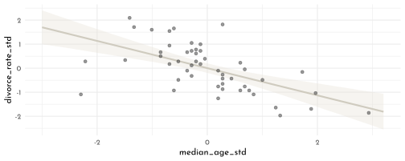
\(\rightarrow\) The posterior for median_age_std (\(\beta_{age}\)) is reliably negative (look at Estimate and 95% quantiles )…
print(brms_c5_model_age)#> Family: gaussian
#> Links: mu = identity; sigma = identity
#> Formula: divorce_std ~ 1 + median_age_std
#> Data: data_waffle (Number of observations: 50)
#> Draws: 4 chains, each with iter = 2000; warmup = 1000; thin = 1;
#> total post-warmup draws = 4000
#>
#> Population-Level Effects:
#> Estimate Est.Error l-95% CI u-95% CI Rhat Bulk_ESS Tail_ESS
#> Intercept 0.00 0.10 -0.20 0.20 1.00 3936 2758
#> median_age_std -0.57 0.11 -0.79 -0.34 1.00 3906 3129
#>
#> Family Specific Parameters:
#> Estimate Est.Error l-95% CI u-95% CI Rhat Bulk_ESS Tail_ESS
#> sigma 0.82 0.08 0.68 1.00 1.00 4302 3021
#>
#> Draws were sampled using sampling(NUTS). For each parameter, Bulk_ESS
#> and Tail_ESS are effective sample size measures, and Rhat is the potential
#> scale reduction factor on split chains (at convergence, Rhat = 1).6.6.2 Marriage rate Model
brms_c5_model_marriage <- brm(
data = data_waffle,
family = gaussian,
divorce_std ~ 1 + marriage_std,
prior = c(prior(normal(0, 0.2), class = Intercept),
prior(normal(0, 0.5), class = b),
prior(exponential(1), class = sigma)),
iter = 2000, warmup = 1000,
chains = 4, cores = 4,
seed = 5,
file = "brms/brms_c5_model_marriage")… smaller magnitude for the marriage rate model:
print(brms_c5_model_marriage)#> Family: gaussian
#> Links: mu = identity; sigma = identity
#> Formula: divorce_std ~ 1 + marriage_std
#> Data: data_waffle (Number of observations: 50)
#> Draws: 4 chains, each with iter = 2000; warmup = 1000; thin = 1;
#> total post-warmup draws = 4000
#>
#> Population-Level Effects:
#> Estimate Est.Error l-95% CI u-95% CI Rhat Bulk_ESS Tail_ESS
#> Intercept 0.00 0.11 -0.22 0.22 1.00 4602 2813
#> marriage_std 0.35 0.13 0.09 0.61 1.00 4325 3000
#>
#> Family Specific Parameters:
#> Estimate Est.Error l-95% CI u-95% CI Rhat Bulk_ESS Tail_ESS
#> sigma 0.95 0.10 0.78 1.16 1.00 4404 3059
#>
#> Draws were sampled using sampling(NUTS). For each parameter, Bulk_ESS
#> and Tail_ESS are effective sample size measures, and Rhat is the potential
#> scale reduction factor on split chains (at convergence, Rhat = 1).nd <- tibble(marriage_std = seq(from = -2.5, to = 3.5, length.out = 30))
# now use `fitted()` to get the model-implied trajectories
fitted(object = brms_c5_model_marriage,
newdata = nd) %>%
as_tibble() %>%
bind_cols(nd) %>%
ggplot(aes(x = marriage_std)) +
geom_smooth(aes(y = Estimate, ymin = Q2.5, ymax = Q97.5),
stat = "identity",
color = clr0d, fill = fll0) +
geom_point(data = data_waffle, aes(y = divorce_std), color = clr_dark )+
labs(x = "marriage_rate_std",
y = "divorce_rate_std")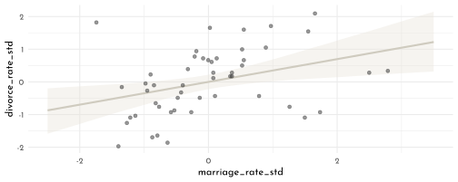
6.6.3 Multiple regression
brms_c5_model_multiple <- brm(
data = data_waffle,
family = gaussian,
divorce_std ~ 1 + marriage_std + median_age_std,
prior = c(prior(normal(0, 0.2), class = Intercept),
prior(normal(0, 0.5), class = b),
prior(exponential(1), class = sigma)),
iter = 2000, warmup = 1000,
chains = 4, cores = 4,
seed = 42,
file = "brms/brms_c5_model_multiple")print(brms_c5_model_multiple)#> Family: gaussian
#> Links: mu = identity; sigma = identity
#> Formula: divorce_std ~ 1 + marriage_std + median_age_std
#> Data: data_waffle (Number of observations: 50)
#> Draws: 4 chains, each with iter = 2000; warmup = 1000; thin = 1;
#> total post-warmup draws = 4000
#>
#> Population-Level Effects:
#> Estimate Est.Error l-95% CI u-95% CI Rhat Bulk_ESS Tail_ESS
#> Intercept 0.00 0.10 -0.19 0.19 1.00 3829 2943
#> marriage_std -0.06 0.16 -0.37 0.25 1.00 3291 2718
#> median_age_std -0.60 0.16 -0.92 -0.29 1.00 2859 2440
#>
#> Family Specific Parameters:
#> Estimate Est.Error l-95% CI u-95% CI Rhat Bulk_ESS Tail_ESS
#> sigma 0.83 0.09 0.68 1.02 1.00 3553 2380
#>
#> Draws were sampled using sampling(NUTS). For each parameter, Bulk_ESS
#> and Tail_ESS are effective sample size measures, and Rhat is the potential
#> scale reduction factor on split chains (at convergence, Rhat = 1).mixedup::summarise_model(brms_c5_model_multiple)#> Group Effect Variance SD SD_2.5 SD_97.5 Var_prop
#> Residual 0.68 0.83 0.68 1.02 1.00
#> Term Value SE Lower_2.5 Upper_97.5
#> Intercept 0.00 0.10 -0.19 0.19
#> marriage_std -0.06 0.16 -0.37 0.25
#> median_age_std -0.60 0.16 -0.92 -0.29bind_cols(
as_draws_df(brms_c5_model_age) %>%
transmute(`brms_age-beta_age` = b_median_age_std),
as_draws_df(brms_c5_model_marriage) %>%
transmute(`brms_marriage-beta_marriage` = b_marriage_std),
as_draws_df(brms_c5_model_multiple) %>%
transmute(`brms_multi-beta_marriage` = b_marriage_std,
`brms_multi-beta_age` = b_median_age_std)
) %>%
pivot_longer(everything()) %>%
group_by(name) %>%
summarise(mean = mean(value),
ll = quantile(value, prob = .025),
ul = quantile(value, prob = .975)) %>%
separate(col = name, into = c("fit", "parameter"), sep = "-") %>%
ggplot(aes(x = mean, xmin = ll, xmax = ul, y = fit)) +
geom_vline(xintercept = 0, color = clr_dark, linetype = 3) +
geom_pointrange(color = clr0d, fill = clr0, shape = 21) +
facet_wrap(~ parameter, ncol = 1, labeller = label_parsed) +
theme(axis.title = element_blank()) 
Simulating divorce data
n <- 50
sim_d <- tibble(age = rnorm(n, mean = 0, sd = 1),
mar = rnorm(n, mean = -age, sd = 1),
div = rnorm(n, mean = age, sd = 1))
brms_c5_model_age_sim <- update(brms_c5_model_age,
newdata = sim_d,
formula = div ~ 1 + age,
seed = 42,
file = "brms/brms_c5_model_age_sim")
brms_c5_model_marriage_sim <- update(brms_c5_model_marriage,
newdata = sim_d,
formula = div ~ 1 + mar,
seed = 42,
file = "brms/brms_c5_model_marriage_sim")
brms_c5_model_multiple_sim <- update(brms_c5_model_multiple,
newdata = sim_d,
formula = div ~ 1 + mar + age,
seed = 42,
file = "brms/brms_c5_model_multiple_sim")
bind_cols(
as_draws_df(brms_c5_model_age_sim) %>%
transmute(`brms_age-beta_age` = b_age),
as_draws_df(brms_c5_model_marriage_sim) %>%
transmute(`brms_marriage-beta_marriage` = b_mar),
as_draws_df(brms_c5_model_multiple_sim) %>%
transmute(`brms_multi-beta_marriage` = b_mar,
`brms_multi-beta_age` = b_age)
) %>%
pivot_longer(everything()) %>%
group_by(name) %>%
summarise(mean = mean(value),
ll = quantile(value, prob = .025),
ul = quantile(value, prob = .975)) %>%
separate(col = name, into = c("fit", "parameter"), sep = "-") %>%
ggplot(aes(x = mean, xmin = ll, xmax = ul, y = fit)) +
geom_vline(xintercept = 0, color = clr_dark, linetype = 3) +
geom_pointrange(color = clr0d, fill = clr0, shape = 21) +
facet_wrap(~ parameter, ncol = 1, labeller = label_parsed) +
theme(axis.title = element_blank())
6.6.4 Multivariate Posteriors
brms_c5_model_residuals_marriage <- brm(
data = data_waffle,
family = gaussian,
marriage_std ~ 1 + median_age_std,
prior = c(prior(normal(0, 0.2), class = Intercept),
prior(normal(0, 0.5), class = b),
prior(exponential(1), class = sigma)),
iter = 2000, warmup = 1000,
chains = 4, cores = 4,
seed = 42,
file = "brms/brms_c5_model_residuals_marriage")fitted(brms_c5_model_residuals_marriage) %>%
data.frame() %>%
bind_cols(data_waffle) %>%
as_tibble() %>%
ggplot(aes(x = median_age_std, y = marriage_std)) +
geom_point(color = clr_dark) +
geom_segment(aes(xend = median_age_std, yend = Estimate),
size = .5, linetype = 3) +
geom_line(aes(y = Estimate),
color = clr0d) +
ggrepel::geom_text_repel(data = . %>%
filter(Loc %in% c("WY", "ND", "ME", "HI", "DC")),
aes(label = Loc),
size = 3, seed = 14, family = fnt_sel) +
labs(x = "median_age_std",
y = "marriage_std")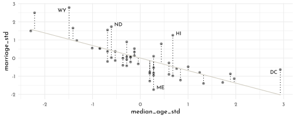
residual_data <- residuals(brms_c5_model_residuals_marriage) %>%
as_tibble() %>%
bind_cols(data_waffle)
brms_c5_model_residuals_data <- brm(
data = residual_data,
family = gaussian,
divorce_std ~ 1 + Estimate,
prior = c(prior(normal(0, 0.2), class = Intercept),
prior(normal(0, 0.5), class = b),
prior(exponential(1), class = sigma)),
iter = 2000, warmup = 1000,
chains = 4, cores = 4,
seed = 42,
file = "brms/brms_c5_model_residuals_data")
nd <- tibble(Estimate = seq(from = -2, to = 2, length.out = 30))
residuals_intervals <- fitted(object = brms_c5_model_residuals_data,
newdata = nd) %>%
as_tibble() %>%
rename(mean = "Estimate") %>%
bind_cols(nd)
residual_data %>%
ggplot(aes(x = Estimate, y = divorce_std)) +
geom_smooth(data = residuals_intervals,
aes(y = mean, ymin = Q2.5, ymax = Q97.5),
stat = "identity",
color = clr0d, fill = fll0) +
geom_vline(xintercept = 0, linetype = 3, color = clr_dark) +
geom_point(color = clr_dark) +
ggrepel::geom_text_repel(data = . %>% filter(Loc %in% c("WY", "ND", "ME", "HI", "DC")),
aes(label = Loc),
size = 3, seed = 5, family = fnt_sel) 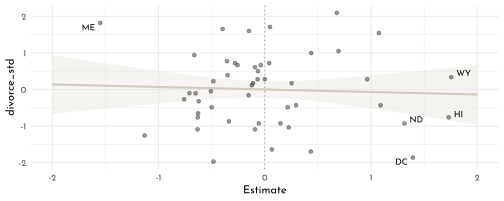
Don’t use residuals as input data for another model - this ignores a ton of uncertainty:
residual_data %>%
ggplot(aes(x = Estimate, y = divorce_std)) +
geom_vline(xintercept = 0, linetype = 3, color = clr_dark) +
geom_pointrange(aes(xmin = `Q2.5`, xmax = `Q97.5`),
color = clr0d, fill = clr0, shape = 21) +
ggrepel::geom_text_repel(data = . %>% filter(Loc %in% c("RI", "ME", "UT", "ID")),
aes(label = Loc),
size = 3, seed = 5, family = fnt_sel) 
Posterior prediction plot:
fitted(brms_c5_model_multiple) %>%
as_tibble() %>%
bind_cols(data_waffle) %>%
ggplot(aes(x = divorce_std, y = Estimate)) +
geom_abline(slope = 1, linetype = 3, color = clr_dark) +
geom_pointrange(aes(ymin = `Q2.5`, ymax = `Q97.5`),
color = clr0d, fill = clr0, shape = 21) +
ggrepel::geom_text_repel(data = . %>% filter(Loc %in% c("RI", "ME", "UT", "ID")),
aes(label = Loc),
size = 3, seed = 5, family = fnt_sel) 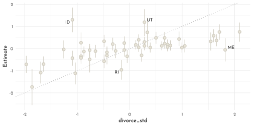
brms_c5_model_spurious <- brm(
data = data_spurious,
family = gaussian,
y ~ 1 + x_real + x_spur,
prior = c(prior(normal(0, 0.2), class = Intercept),
prior(normal(0, 0.5), class = b),
prior(exponential(1), class = sigma)),
iter = 2000, warmup = 1000,
chains = 4, cores = 4,
seed = 42,
file = "brms/brms_c5_model_spurious")
mixedup::extract_fixef(brms_c5_model_spurious)#> # A tibble: 3 x 5
#> term value se lower_2.5 upper_97.5
#> <chr> <dbl> <dbl> <dbl> <dbl>
#> 1 Intercept 0.05 0.096 -0.135 0.242
#> 2 x_real 0.902 0.146 0.619 1.18
#> 3 x_spur 0.094 0.108 -0.113 0.3096.6.5 Counterfactual plots
At this point, it’s important to recognize we have two regression models. As a first step, we might specify each model separately in a
bf()function and save them as objects (Estimating multivariate models with brms).
divorce_model <- bf(divorce.std ~ 1 + median.age.std + marriage.std)
marriage_model <- bf(marriage.std ~ 1 + median.age.std)
divorce_model <- bf(divorcestd ~ 1 + medianagestd + marriagestd)
marriage_model <- bf(marriagestd ~ 1 + medianagestd)Next we will combine our
bf()objects with the+operator within thebrm()function. For a model like this, we also specifyset_rescor(FALSE)to prevent brms from adding a residual correlation between d and m. Also, notice how each prior statement includes a resp argument. This clarifies which sub-model the prior refers to.
# can't use _ or . in column names in this context
data_waffle_short <- data_waffle %>% set_names(nm = names(data_waffle) %>% str_remove_all("_"))
brms_c5_model_counterfactual <- brm(
data = data_waffle_short,
family = gaussian,
divorce_model + marriage_model + set_rescor(FALSE),
prior = c(prior(normal(0, 0.2), class = Intercept, resp = divorcestd),
prior(normal(0, 0.5), class = b, resp = divorcestd),
prior(exponential(1), class = sigma, resp = divorcestd),
prior(normal(0, 0.2), class = Intercept, resp = marriagestd),
prior(normal(0, 0.5), class = b, resp = marriagestd),
prior(exponential(1), class = sigma, resp = marriagestd)),
chains = 4, cores = 4,
seed = 42,
file = "brms/brms_c5_model_counterfactual")
print(brms_c5_model_counterfactual)#> Family: MV(gaussian, gaussian)
#> Links: mu = identity; sigma = identity
#> mu = identity; sigma = identity
#> Formula: divorcestd ~ 1 + medianagestd + marriagestd
#> marriagestd ~ 1 + medianagestd
#> Data: data_waffle_short (Number of observations: 50)
#> Draws: 4 chains, each with iter = 2000; warmup = 1000; thin = 1;
#> total post-warmup draws = 4000
#>
#> Population-Level Effects:
#> Estimate Est.Error l-95% CI u-95% CI Rhat Bulk_ESS
#> divorcestd_Intercept -0.00 0.10 -0.20 0.19 1.00 5659
#> marriagestd_Intercept -0.00 0.09 -0.18 0.17 1.00 5705
#> divorcestd_medianagestd -0.61 0.16 -0.90 -0.29 1.00 3490
#> divorcestd_marriagestd -0.06 0.15 -0.36 0.25 1.00 3354
#> marriagestd_medianagestd -0.69 0.10 -0.89 -0.49 1.00 4910
#> Tail_ESS
#> divorcestd_Intercept 2695
#> marriagestd_Intercept 3063
#> divorcestd_medianagestd 2968
#> divorcestd_marriagestd 2948
#> marriagestd_medianagestd 3278
#>
#> Family Specific Parameters:
#> Estimate Est.Error l-95% CI u-95% CI Rhat Bulk_ESS Tail_ESS
#> sigma_divorcestd 0.83 0.09 0.68 1.02 1.00 5112 3245
#> sigma_marriagestd 0.71 0.08 0.58 0.89 1.00 4852 2896
#>
#> Draws were sampled using sampling(NUTS). For each parameter, Bulk_ESS
#> and Tail_ESS are effective sample size measures, and Rhat is the potential
#> scale reduction factor on split chains (at convergence, Rhat = 1).nd <- tibble(medianagestd = seq(from = -2, to = 2, length.out = 30),
marriagestd = 0)
predict(brms_c5_model_counterfactual,
resp = "divorcestd",
newdata = nd) %>%
data.frame() %>%
bind_cols(nd) %>%
ggplot(aes(x = medianagestd, y = Estimate, ymin = Q2.5, ymax = Q97.5)) +
geom_smooth(stat = "identity",
fill = fll0, color = clr0d, size = .2) +
labs(subtitle = "Total counterfactual effect of A on D",
x = "manipulated median_age_std",
y = "counterfactual divorce_std")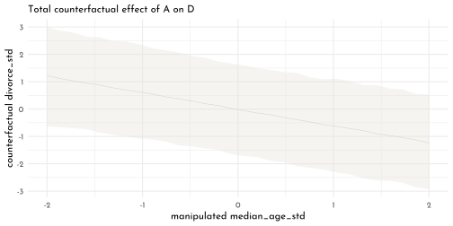
nd <- tibble(marriagestd = seq(from = -2, to = 2, length.out = 30),
medianagestd = 0)
predict(brms_c5_model_counterfactual,
resp = "divorcestd",
newdata = nd) %>%
data.frame() %>%
bind_cols(nd) %>%
ggplot(aes(x = marriagestd, y = Estimate, ymin = Q2.5, ymax = Q97.5)) +
geom_smooth(stat = "identity",
fill = fll0, color = clr0d, size = .2) +
labs(subtitle = "Total counterfactual effect of M on D",
x = "manipulated marriage_std",
y = "counterfactual divorce_std")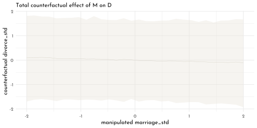
6.6.6 Masked Relationships
brms_c5_model_milk_draft <- brm(
data = data_milk,
family = gaussian,
kcal_std ~ 1 + neocortex_std,
prior = c(prior(normal(0, 1), class = Intercept),
prior(normal(0, 1), class = b),
prior(exponential(1), class = sigma)),
iter = 2000, warmup = 1000, chains = 4, cores = 4,
seed = 42,
sample_prior = TRUE,
file = "brms/brms_c5_model_milk_draft")
set.seed(42)
prior_draws(brms_c5_model_milk_draft) %>%
slice_sample(n = 50) %>%
rownames_to_column() %>%
expand(nesting(rowname, Intercept, b),
neocortex_std = c(-2, 2)) %>%
mutate(kcal_std = Intercept + b * neocortex_std) %>%
ggplot(aes(x = neocortex_std, y = kcal_std)) +
geom_line(aes(group = rowname),
color = clr0d %>% clr_alpha()) +
coord_cartesian(ylim = c(-2, 2)) +
labs(x = "neocortex_std",
y = "kcal_std",
subtitle = "Intercept ~ dnorm(0, 1); b ~ dnorm(0, 1)")
brms_c5_model_milk_cortex <- brm(
data = data_milk,
family = gaussian,
kcal_std ~ 1 + neocortex_std,
prior = c(prior(normal(0, 0.2), class = Intercept),
prior(normal(0, 0.5), class = b),
prior(exponential(1), class = sigma)),
iter = 2000, warmup = 1000, chains = 4, cores = 4,
seed = 42,
sample_prior = TRUE,
file = "brms/brms_c5_model_milk_cortex")
set.seed(42)
prior_draws(brms_c5_model_milk_cortex) %>%
slice_sample(n = 50) %>%
rownames_to_column() %>%
expand(nesting(rowname, Intercept, b),
neocortex_std = c(-2, 2)) %>%
mutate(kcal_std = Intercept + b * neocortex_std) %>%
ggplot(aes(x = neocortex_std, y = kcal_std)) +
geom_line(aes(group = rowname),
color = clr0d %>% clr_alpha()) +
coord_cartesian(ylim = c(-2, 2)) +
labs(x = "neocortex_std",
y = "kcal_std",
subtitle = "Intercept ~ dnorm(0, 0.2); b ~ dnorm(0, 0.5)")
bind_rows(
as_draws_df(brms_c5_model_milk_draft) %>% select(b_Intercept:sigma),
as_draws_df(brms_c5_model_milk_cortex) %>% select(b_Intercept:sigma)
) %>%
mutate(fit = rep(c("milk_draft", "milk_cortex"), each = n() / 2)) %>%
pivot_longer(-fit, names_to = "parameter") %>%
group_by(parameter, fit) %>%
summarise(mean = mean(value),
ll = quantile(value, prob = .025),
ul = quantile(value, prob = .975)) %>%
mutate(fit = factor(fit, levels = c("milk_draft", "milk_cortex"))) %>%
ggplot(aes(x = mean, xmin = ll, xmax = ul, y = fit)) +
geom_vline(xintercept = 0, color = clr_dark, linetype = 3) +
geom_pointrange(color = clr0d, fill = clr0, shape = 21) +
facet_wrap(~ parameter, ncol = 1) +
theme(axis.title = element_blank())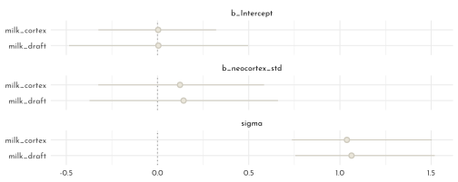
nd <- tibble(neocortex_std = seq(from = -2.5, to = 2, length.out = 30))
fitted(brms_c5_model_milk_cortex,
newdata = nd,
probs = c(.025, .975, .25, .75)) %>%
as_tibble() %>%
bind_cols(nd) %>%
ggplot(aes(x = neocortex_std, y = Estimate, ymin = Q25, ymax = Q75)) +
geom_ribbon(aes(ymin = Q2.5, ymax = Q97.5),
fill = fll0) +
geom_smooth(stat = "identity",
fill = fll0, color = clr0d, size = .2) +
geom_point(data = data_milk, aes(x = neocortex_std, y = kcal_std),
inherit.aes = FALSE, color = clr_dark) +
labs(y = 'kcal_std')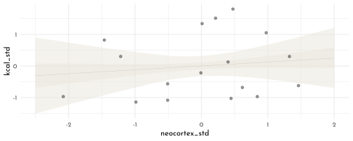
brms_c5_model_milk_weight <- brm(
data = data_milk,
family = gaussian,
kcal_std ~ 1 + mass_std,
prior = c(prior(normal(0, 0.2), class = Intercept),
prior(normal(0, 0.5), class = b),
prior(exponential(1), class = sigma)),
iter = 2000, warmup = 1000,
chains = 4, cores = 4,
seed = 42,
sample_prior = TRUE,
file = "brms/brms_c5_model_milk_weight")
nd <- tibble(mass_std = seq(from = -2.5, to = 2.5, length.out = 30))
fitted(brms_c5_model_milk_weight,
newdata = nd,
probs = c(.025, .975, .25, .75)) %>%
as_tibble() %>%
bind_cols(nd) %>%
ggplot(aes(x = mass_std, y = Estimate, ymin = Q25, ymax = Q75)) +
geom_ribbon(aes(ymin = Q2.5, ymax = Q97.5),
fill = fll0) +
geom_smooth(stat = "identity",
fill = fll0, color = clr0d, size = .2) +
geom_point(data = data_milk, aes(x = mass_std, y = kcal_std),
inherit.aes = FALSE, color = clr_dark) +
labs(y = 'kcal_std')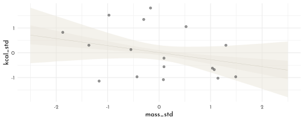
brms_c5_model_milk_multi <- brm(
data = data_milk,
family = gaussian,
kcal_std ~ 1 + neocortex_std + mass_std,
prior = c(prior(normal(0, 0.2), class = Intercept),
prior(normal(0, 0.5), class = b),
prior(exponential(1), class = sigma)),
iter = 2000, warmup = 1000,
chains = 4, cores = 4,
seed = 42,
file = "brms/brms_c5_model_milk_multi")
bind_cols(
as_draws_df(brms_c5_model_milk_cortex) %>%
transmute(`cortex-beta_N` = b_neocortex_std),
as_draws_df(brms_c5_model_milk_weight) %>%
transmute(`weight-beta_M` = b_mass_std),
as_draws_df(brms_c5_model_milk_multi) %>%
transmute(`multi-beta_N` = b_neocortex_std,
`multi-beta_M` = b_mass_std)
) %>%
pivot_longer(everything()) %>%
group_by(name) %>%
summarise(mean = mean(value),
ll = quantile(value, prob = .025),
ul = quantile(value, prob = .975)) %>%
separate(name, into = c("fit", "parameter"), sep = "-") %>%
ggplot(aes(x = mean, y = fit, xmin = ll, xmax = ul)) +
geom_pointrange(color = clr0d, fill = clr0, shape = 21) +
geom_vline(xintercept = 0, color = clr_dark, linetype = 3) +
ylab(NULL) +
facet_wrap(~ parameter, ncol = 1)
nd <- tibble(neocortex_std = seq(from = -2.5, to = 2, length.out = 30),
mass_std = 0)
fitted(brms_c5_model_milk_multi,
newdata = nd,
probs = c(.025, .975, .25, .75)) %>%
as_tibble() %>%
bind_cols(nd) %>%
ggplot(aes(x = neocortex_std, y = Estimate)) +
geom_ribbon(aes(ymin = Q2.5, ymax = Q97.5),
fill = fll0) +
geom_smooth(aes(ymin = Q25, ymax = Q75),
stat = "identity",
fill = fll0, color = clr0d, size = .2) +
labs(subtitle = "Counterfactual holding M = 0",
x = "neocortex_std",
y = "kcal_std")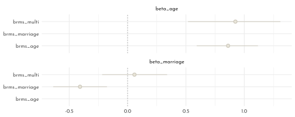
nd <- tibble(mass_std = seq(from = -2.5, to = 2.5, length.out = 30),
neocortex_std = 0)
fitted(brms_c5_model_milk_multi,
newdata = nd,
probs = c(.025, .975, .25, .75)) %>%
as_tibble() %>%
bind_cols(nd) %>%
ggplot(aes(x = mass_std, y = Estimate)) +
geom_ribbon(aes(ymin = Q2.5, ymax = Q97.5),
fill = fll0) +
geom_smooth(aes(ymin = Q25, ymax = Q75),
stat = "identity",
fill = fll0, color = clr0d, size = .2) +
labs(subtitle = "Counterfactual holding M = 0",
x = "mass_std",
y = "kcal_std")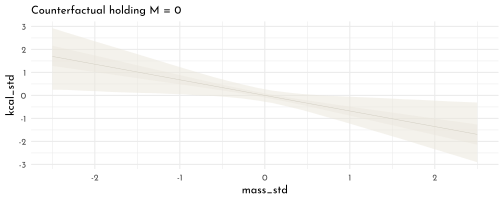
brms_c5_model_milk_multi_sim <- update(
brms_c5_model_milk_multi,
newdata = data_milk_sim1,
formula = kcal_std ~ 1 + neocortex_std + mass_std,
seed = 42,
file = "brms/brms_c5_model_milk_multi_sim")
brms_c5_model_milk_cortex_sim <- update(
brms_c5_model_milk_cortex,
formula = kcal_std ~ 1 + neocortex_std,
seed = 42,
file = "brms/brms_c5_model_milk_cortex_sim")
brms_c5_model_milk_weight_sim <- update(
brms_c5_model_milk_weight,
formula = kcal_std ~ 1 + mass_std,
seed = 42,
file = "brms/brms_c5_model_milk_weight_sim")
mixedup::extract_fixef(brms_c5_model_milk_cortex_sim)#> # A tibble: 2 x 5
#> term value se lower_2.5 upper_97.5
#> <chr> <dbl> <dbl> <dbl> <dbl>
#> 1 Intercept 0.003 0.162 -0.324 0.321
#> 2 neocortex_std 0.123 0.231 -0.325 0.584mixedup::extract_fixef(brms_c5_model_milk_weight_sim)#> # A tibble: 2 x 5
#> term value se lower_2.5 upper_97.5
#> <chr> <dbl> <dbl> <dbl> <dbl>
#> 1 Intercept 0.005 0.152 -0.293 0.307
#> 2 mass_std -0.283 0.221 -0.708 0.158mixedup::extract_fixef(brms_c5_model_milk_multi_sim)#> # A tibble: 3 x 5
#> term value se lower_2.5 upper_97.5
#> <chr> <dbl> <dbl> <dbl> <dbl>
#> 1 Intercept -0.047 0.081 -0.208 0.112
#> 2 neocortex_std 0.982 0.096 0.794 1.17
#> 3 mass_std -1.04 0.118 -1.26 -0.8086.6.7 Categorical Variables
6.6.7.1 Binary Categories
For an indicator variable, we need this to be a factor():
data_height <- data_height %>% mutate(sex = factor(sex))
brms_c5_model_height <- brm(
data = data_height,
family = gaussian,
height ~ 0 + sex,
prior = c(prior(normal(178, 20), class = b),
prior(exponential(1), class = sigma)),
iter = 2000, warmup = 1000,
chains = 4, cores = 4,
seed = 42,
file = "brms/brms_c5_model_height")contrasts with {brms}
library(tidybayes)
as_draws_df(brms_c5_model_height) %>%
mutate(diff_fm = b_sex1 - b_sex2) %>%
gather(key, value, -`lp__`) %>%
group_by(key) %>%
mean_qi(value, .width = .89) %>%
filter(!grepl(key, pattern = "^\\.")) %>%
knitr::kable()| key | value | .lower | .upper | .width | .point | .interval |
|---|---|---|---|---|---|---|
| b_sex1 | 134.901752 | 132.38783 | 137.448902 | 0.89 | mean | qi |
| b_sex2 | 142.593033 | 139.91077 | 145.293809 | 0.89 | mean | qi |
| diff_fm | -7.691281 | -11.49839 | -3.924036 | 0.89 | mean | qi |
| sigma | 26.767597 | 25.51963 | 28.079138 | 0.89 | mean | qi |
6.6.7.2 Many Categories
brms_c5_model_milk_clade <- brm(
data = data_milk,
family = gaussian,
kcal_std ~ 0 + clade,
prior = c(prior(normal(0, 0.5), class = b),
prior(exponential(1), class = sigma)),
iter = 2000, warmup = 1000,
chains = 4, cores = 4,
seed = 42,
file = "brms/brms_c5_model_milk_clade")library(bayesplot)
(mcmc_intervals_data(brms_c5_model_milk_clade, prob = .5) %>%
filter(grepl(parameter, pattern = "^b")) %>%
ggplot(aes(y = parameter)) +
geom_vline(xintercept = 0, color = clr_dark, linetype = 3) +
geom_linerange(aes(xmin = ll, xmax = hh), lwd = .2, color = clr2) +
geom_pointrange(aes(xmin = l, x = m, xmax = h),
lwd = .7, shape = 21, color = clr2, fill = clr_lighten(clr2,.2))) +
theme(axis.title = element_blank())
as_draws_df(brms_c5_model_milk_clade) %>%
select(starts_with("b")) %>%
as_tibble() %>%
set_names(x = . , nm = names(.) %>% str_remove("b_clade")) %>%
pivot_longer(everything()) %>%
ggplot(aes(x = value, y = reorder(name, value))) + # note how we used `reorder()` to arrange the coefficients
geom_vline(xintercept = 0, color = clr_dark, linetype = 3) +
stat_pointinterval(point_interval = mode_hdi, .width = .89,
size = 2, shape = 21, color = clr2, fill = clr_lighten(clr2,.2)) +
labs(title = "My tidybayes-based coefficient plot",
x = "expected kcal (std)",
y = NULL)
naïve {brms} model fit:
brms_c5_model_milk_house <- brm(
data = data_milk_clade,
family = gaussian,
kcal_std ~ 0 + clade + house,
prior = c(prior(normal(0, 0.5), class = b),
prior(exponential(1), class = sigma)),
iter = 2000, warmup = 1000,
chains = 4, cores = 4,
seed = 42,
file = "brms/brms_c5_model_milk_house")\(\rightarrow\) there are only three house levels 🤨.
mixedup::extract_fixef(brms_c5_model_milk_house)#> # A tibble: 7 x 5
#> term value se lower_2.5 upper_97.5
#> <chr> <dbl> <dbl> <dbl> <dbl>
#> 1 cladeApe -0.431 0.261 -0.932 0.082
#> 2 cladeNewWorldMonkey 0.326 0.253 -0.173 0.824
#> 3 cladeOldWorldMonkey 0.497 0.286 -0.075 1.04
#> 4 cladeStrepsirrhine -0.504 0.294 -1.04 0.088
#> 5 houseHufflepuff -0.175 0.285 -0.742 0.378
#> 6 houseRavenclaw -0.129 0.278 -0.667 0.413
#> 7 houseSlytherin 0.489 0.293 -0.109 1.04precis(model_milk_house, depth = 2) %>%
as.matrix() %>% knitr::kable()| mean | sd | 5.5% | 94.5% | |
|---|---|---|---|---|
| alpha_clade[1] | -0.4205362 | 0.2603510 | -0.8366273 | -0.0044451 |
| alpha_clade[2] | 0.3836736 | 0.2596808 | -0.0313464 | 0.7986937 |
| alpha_clade[3] | 0.5664463 | 0.2890333 | 0.1045153 | 1.0283773 |
| alpha_clade[4] | -0.5055652 | 0.2966455 | -0.9796621 | -0.0314684 |
| alpha_house[1] | -0.1025635 | 0.2617090 | -0.5208251 | 0.3156981 |
| alpha_house[2] | -0.1996998 | 0.2754408 | -0.6399074 | 0.2405079 |
| alpha_house[3] | -0.1603306 | 0.2690551 | -0.5903326 | 0.2696713 |
| alpha_house[4] | 0.4866255 | 0.2875133 | 0.0271236 | 0.9461274 |
| sigma | 0.6631322 | 0.0881257 | 0.5222904 | 0.8039741 |
But there is no overall intercept, α, that stands for the expected value when all the predictors are set to 0. When we use the typical formula syntax with brms, we can suppress the overall intercept when for a single index variable with the
<criterion> ~ 0 + <index variable>syntax. That’s exactly what we did with our b5.9 model. The catch is this approach only works with one index variable within brms. Even though we suppressed the default intercept with our formula,kcal_std ~ 0 + clade + house, we ended up loosing the first category of the second variable, house. […] The solution is the use the non-linear syntax.
brms_c5_model_milk_house_correct_index <-
brm(data = data_milk_clade,
family = gaussian,
bf(kcal_std ~ 0 + a + h,
a ~ 0 + clade,
h ~ 0 + house,
nl = TRUE),
prior = c(prior(normal(0, 0.5), nlpar = a),
prior(normal(0, 0.5), nlpar = h),
prior(exponential(1), class = sigma)),
iter = 2000, warmup = 1000,
chains = 4, cores = 4,
seed = 42,
file = "brms/brms_c5_model_milk_house_correct_index")
mixedup::extract_fixef(brms_c5_model_milk_house_correct_index)#> # A tibble: 8 x 5
#> term value se lower_2.5 upper_97.5
#> <chr> <dbl> <dbl> <dbl> <dbl>
#> 1 a_cladeApe -0.395 0.28 -0.936 0.146
#> 2 a_cladeNewWorldMonkey 0.363 0.28 -0.183 0.902
#> 3 a_cladeOldWorldMonkey 0.527 0.307 -0.112 1.11
#> 4 a_cladeStrepsirrhine -0.455 0.321 -1.10 0.167
#> 5 h_houseGryffindor -0.097 0.284 -0.658 0.445
#> 6 h_houseHufflepuff -0.196 0.298 -0.771 0.396
#> 7 h_houseRavenclaw -0.159 0.285 -0.715 0.39
#> 8 h_houseSlytherin 0.468 0.31 -0.138 1.07as_draws_df(brms_c5_model_milk_house_correct_index) %>%
pivot_longer(starts_with("b_")) %>%
mutate(name = str_remove(name, "b_") %>%
str_remove(., "clade") %>%
str_remove(., "house") %>%
str_replace(., "World", " World ")) %>%
separate(name, into = c("predictor", "level"), sep = "_") %>%
mutate(predictor = if_else(predictor == "a", "clade", "house")) %>%
ggplot(aes(x = value, y = reorder(level, value))) + # note how we used `reorder()` to arrange the coefficients
geom_vline(xintercept = 0, color = clr_dark, linetype = 3) +
stat_pointinterval(point_interval = mode_hdi, .width = .89,
size = 2, color = clr0d, fill = clr0, shape = 21 ) +
labs(x = "expected_kcal_std",
y = NULL) +
facet_wrap(~ predictor, scales = "free_y")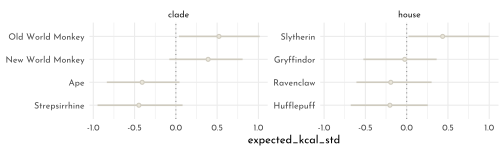
6.6.8 Alternative ways to model multiple categories
6.6.8.1 Contrast Coding
data_contrast <- data_height %>%
mutate(sex_c = if_else(sex == "1", -0.5, 0.5))
brms_c5_model_height_contrast <- brm(
data = data_contrast,
family = gaussian,
height ~ 1 + sex_c,
prior = c(prior(normal(178, 20), class = Intercept),
prior(normal(0, 10), class = b),
prior(exponential(1), class = sigma)),
iter = 2000, warmup = 1000,
chains = 4, cores = 4,
seed = 42,
file = "brms/brms_c5_model_height_contrast")Our posterior for \(\alpha\), above, is designed to capture the
average_of_the_group_means_in_height, notmean_height. In cases where the sample sizes in the two groups were equal, these two would be same. Since we have different numbers of males and females in our data, the two values differ a bit
as_draws_df(brms_c5_model_height_contrast) %>%
mutate(male = b_Intercept - b_sex_c * 0.5,
female = b_Intercept + b_sex_c * 0.5,
`female - male` = b_sex_c) %>%
pivot_longer(male:`female - male`) %>%
ggplot(aes(x = value, y = 0)) +
stat_halfeye(.width = .95, shape = 21,
fill = fll0, color = clr0d,
normalize = "panels") +
scale_y_continuous(NULL, breaks = NULL) +
xlab("height") +
facet_wrap(~ name, scales = "free")
6.6.9 Multilevel ANOVA
(This might make sense after reading Chapter 13…)
\[ \begin{array}{ccccr} K_i & {\sim} & Normal(\mu_i, \sigma) & &\textrm{[likelihood]}\\ \mu_i & = & \alpha + u_{j[i]} & &\textrm{[linear model]}\\ \alpha & \sim & Normal(0, 0.5) & &\textrm{[$\alpha$ prior]}\\ \sigma & \sim & Exponential(1) & &\textrm{[$\sigma$ prior]} \\ u_{j[i]} & \sim & Normal(0, \sigma_{CLADE}) & \textrm{for}~j = 1..4 &\textrm{[u prior]}\\ \sigma_{CLADE} & \sim & Exponential(1) & &\textrm{[$\sigma_{CLADE}$ prior]} \\ \end{array} \]
the four clade-specific deviations from that mean are captured by the four levels of \(u_j\), which are themselves modeled as normally distributed with a mean of zero (because they are deviations, after all) and a standard deviation \(\sigma_{CLADE}\)
brms_c5_model_milk_anova <- brm(
data = data_milk,
family = gaussian,
kcal_std ~ 1 + (1 | clade),
prior = c(prior(normal(0, 0.5), class = Intercept),
prior(exponential(1), class = sigma),
prior(exponential(1), class = sd)),
iter = 2000, warmup = 1000,
chains = 4, cores = 4,
seed = 5,
file = "brms/brms_c5_model_milk_anova")
as_draws_df(brms_c5_model_milk_anova) %>%
mutate(Ape = b_Intercept + `r_clade[Ape,Intercept]`,
`New World Monkey` = b_Intercept + `r_clade[New.World.Monkey,Intercept]`,
`Old World Monkey` = b_Intercept + `r_clade[Old.World.Monkey,Intercept]`,
Strepsirrhine = b_Intercept + `r_clade[Strepsirrhine,Intercept]`) %>%
pivot_longer(Ape:Strepsirrhine) %>%
ggplot(aes(x = value, y = reorder(name, value))) +
geom_vline(xintercept = 0, color = clr_dark, linetype = 3) +
stat_pointinterval(point_interval = mode_hdi, .width = .89,
size = 2, color = clr0d, fill = clr0, shape = 21 ) +
labs(x = "expected_kcal_std",
y = NULL)